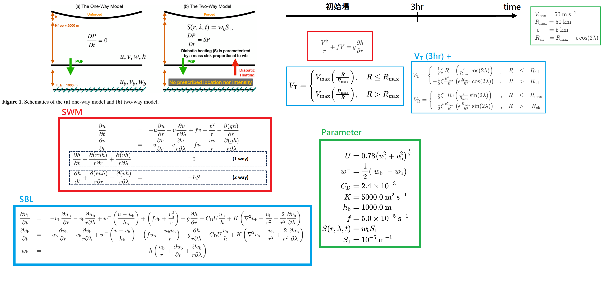
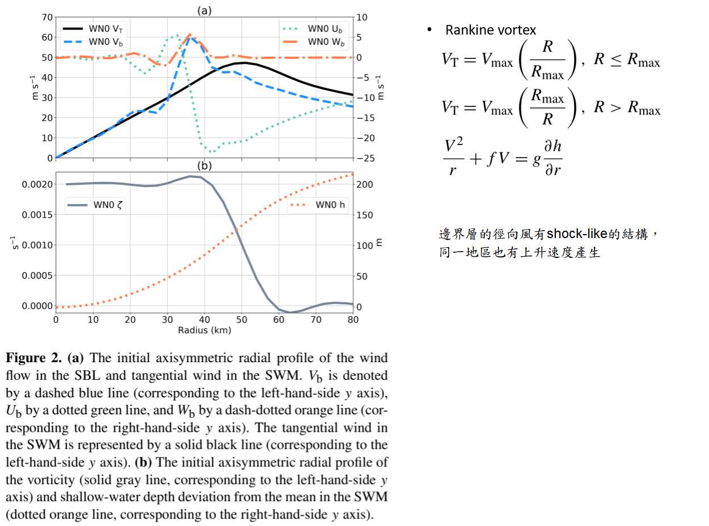
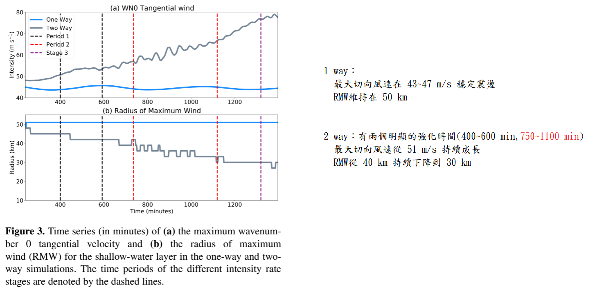

Tropical cyclone asymmetric eyewall evolution and intensification in a two-layer model#
Ting-Yu Cha , Michael M. Bell
論文#
Abstract#
Radar and satellite imagery of numerous intensifying tropical cyclones (TCs) depict an appearance of a polygonal eyewall structure where deep convection is often located near the polygonal vertices. A recent observational study of Hurricane Michael’s (2018) polygonal eyewall evolution suggests that the vorticity asymmetries are coupled with the reflectivity asymmetries during rapid intensification. Conceptual theory of a polygonal eyewall structure has been linked to vortex Rossby waves (VRWs) and the breakdown of an enhanced potential vorticity (\(\text{PV}\)) ring, but how the asymmetries affect TC intensification remains unclear. Non-divergent barotropic models have previously been employed to study polygonal eyewall dynamics, but this approach has limitations due to the importance of diabatic heating to \(\text{PV}\) generation and the intensification process. Results from prior studies motivate us to explore the nature of the relationship between asymmetric vorticity and vertical velocity in the free atmosphere and the boundary layer and their compound impacts on the TC intensification process.
Here we use a simple two-layer model framework with a shallow-water model on top of a slab boundary layer (SBL) model to simulate a frictional boundary layer underneath the free atmosphere. Results from simulating a wavenumber 2 elliptical asymmetry suggest the VRW in the free atmosphere can organize the updrafts in the SBL, which is consistent with radar observations of enhanced reflectivity at the polygonal vertices. Free atmospheric divergence in the shallow-water layer does not explain the coupling between vorticity and reflectivity. The coupling can be explained to first order by the one-way boundary layer response to the pressure gradient associated with the free atmospheric vorticity asymmetries, consistent with prior studies.
Further simulations that allow two-way interaction between the layers show that the organization of the updrafts out of the SBL plays a critical role in the growth of a \(\text{PV}\) ring and intensification of the mean vortex. In this framework, diabatic heating in the shallow-water layer parameterized by a mass sink driven by the free atmosphere–SBL interaction leads to rapid intensification of the vortex, thinning of the \(\text{PV}\) ring, and eventual barotropic instability and \(\text{PV}\) mixing. The simplified modeling framework with two-way interactions captures many of the essential dynamics of rapid intensification in the presence of evolving asymmetries, similar to those seen in the observations from Hurricane Michael (2018), which provides new insight into the complex interactions between dynamics and convection during hurricane intensification.
摘要 (Abstract)
許多正在增強的熱帶氣旋（TCs）的雷達與衛星影像，描繪出多邊形眼牆結構的外觀，其中深對流通常位於多邊形的頂點附近。最近一項關於 2018 年颶風麥可（Hurricane Michael）多邊形眼牆演變的觀測研究指出，在快速增強（rapid intensification）期間，渦度不對稱性與雷達回波不對稱性是相互耦合的。多邊形眼牆結構的概念理論已被連結到渦旋羅斯貝波（VRWs）以及增強的位勢渦度（\(\text{PV}\)）環的崩潰，但這些不對稱性如何影響熱帶氣旋的增強仍然未知。過去曾使用無輻散正壓模型來研究多邊形眼牆動力學，但由於非絕熱加熱（diabatic heating）對 \(\text{PV}\) 生成與氣旋增強過程極為重要，這種方法有其局限性。過去研究的結果促使我們探索自由大氣與邊界層中，不對稱渦度與垂直速度之間關係的本質，以及它們對熱帶氣旋增強過程的複合影響。
在此，我們使用一個簡單的雙層模型架構：上層為淺水模型（shallow-water model），疊加於底層的平板邊界層（SBL）模型之上，以模擬自由大氣下方帶有摩擦力的邊界層。模擬波數 2（wavenumber 2）橢圓不對稱性的結果指出，自由大氣中的 VRW 能夠組織 SBL 中的上升氣流，這與雷達觀測到多邊形頂點回波增強的現象一致。淺水層中的自由大氣輻散無法解釋渦度與回波之間的耦合。這種耦合可以主要（to first order）由邊界層對自由大氣渦度不對稱性所伴隨之氣壓梯度的「單向（one-way）」響應來解釋，這與過去的研究一致。
進一步允許 兩層之間進行雙向交互作用（two-way interaction）的模擬顯示，SBL 組織並激發出的上升氣流，對於 \(\text{PV}\) 環的增長與平均渦旋的增強扮演著關鍵角色。在此架構下，由自由大氣與底層交互作用驅動的質量匯（mass sink）所參數化的非絕熱加熱，會導致渦旋的快速增強、\(\text{PV}\) 環變薄，最終引發正壓不穩定性（barotropic instability）與 \(\text{PV}\) 混合。這個具備雙向交互作用的簡化模型架構，捕捉到了在不對稱性演變下快速增強的許多基本動力學特徵，類似於颶風麥可（2018）中觀測到的現象，這為颶風增強期間動力學與對流之間複雜的交互作用提供了新的見解。
1. Introduction#
Radar and satellite imagery have captured polygonal eyewall structures in numerous intensifying tropical cyclones (TCs), such as Typhoon Herb (1996) (Kuo et al., 1999), Hurricane Isabel (2003) (Kossin and Schubert, 2004), Hurricane Dolly (2008) (Hendricks et al., 2012), Hurricane Karal (2010) (Guimond et al., 2016), and Hurricane Michael (2018) (Cha et al., 2020). Since the precipitation structure can be organized by the underlying dynamics, numerous theoretical studies have conceptually described the dynamics behind the observed polygonal shape in reflectivity or satellite brightness temperatures as a result of barotropic or combined barotropic–baroclinic instability of a potential vorticity (\(\text{PV}\)) ring through counter-propagating vortex Rossby waves (VRWs). The instability can further lead to the breakdown of the \(\text{PV}\) ring and eye–eyewall mixing (Kuo et al., 1999; Schubert et al., 1999; Hendricks et al., 2010). In Cha et al. (2020), it was demonstrated through analysis of observed reflectivity and retrieved tangential wind asymmetries of Hurricane Michael during rapid intensification that barotropic linear VRW theory provided a good quantitative explanation of the azimuthal propagation speed of the polygonal eyewall structure, suggesting a close coupling of the vorticity asymmetries and deep convection. Observations are able to resolve some of the convective, dynamic, and thermodynamic characteristics but are difficult to use alone to fully understand the key physical processes due to limited high-resolution temporal and spatial observations of a complex atmospheric structure. The mechanisms that force deep convection at the polygonal vertices and how those convective asymmetries play a role in TC intensification were unable to be addressed with the observational dataset in Cha et al. (2020).
Kuo et al. (1999); Kossin & Schubert (2004); Hendricks et al. (2012); Guimond et al. (2016); Cha et al. (2020)
觀測發現 (Observational Finding)： 雷達與衛星影像已經在許多增強中的熱帶氣旋（TCs）中捕捉到了多邊形眼牆結構（Polygonal eyewall structures），這些真實案例包含了 1996 年的賀伯颱風（Typhoon Herb）、2003 年的伊莎貝爾颶風（Hurricane Isabel）、2008 年的朵莉颶風（Hurricane Dolly）、2010 年的卡爾颶風（Hurricane Karl）以及 2018 年的麥可颶風（Hurricane Michael）。
Kuo et al. (1999); Schubert et al. (1999); Hendricks et al. (2010)
理論機制 (Theoretical Mechanism)： 由於降水結構可以受到底層流體動力學的組織與引導，許多理論研究在概念上將雷達回波或衛星亮度溫度中所看到的多邊形狀，解釋為：位勢渦度（\(\text{PV}\)）環透過反向傳播的渦旋羅斯貝波（VRWs），所引發的正壓或正壓-斜壓混合不穩定性（Barotropic or combined barotropic–baroclinic instability）的結果。
動力學影響 (Dynamical Impact)： 這種流體不穩定性會進一步導致位勢渦度（\(\text{PV}\)）環的崩潰，並引發風眼與眼牆之間的混合（Eye–eyewall mixing）。
Cha et al. (2020)
研究發現 (Finding)： 透過分析麥可颶風在快速增強期間觀測到的雷達回波與反演出的切向風不對稱性，該研究證實正壓線性 VRW 理論（Barotropic linear VRW theory）能夠對多邊形眼牆結構的方位角傳播速度提供良好的定量解釋。這項證據表明，渦度不對稱性與深對流（Deep convection）之間存在著緊密的耦合關係（Coupling）。
研究限制 (Limitation)：
觀測本質的侷限：雖然觀測資料能解析出部分對流、動力與熱力學特徵，但面對複雜的大氣結構，受限於「缺乏極高時空解析度」的觀測資料，單靠純觀測手段是很難完全理解關鍵物理過程的。
未解之謎：具體而言，基於 Cha 等人 (2020) 的觀測資料集，仍然無法解答兩個核心問題：一是「是什麼機制在多邊形頂點（Vertices）迫使深對流發生」，二是「這些對流不對稱性在熱帶氣旋增強過程中究竟扮演了什麼角色」。
As an alternative to the complexity of real observations, many studies employ full-physics modeling to provide four-dimensional dynamical and thermodynamical fields to study the relationships between dynamics and convective processes. However, the results of such studies can depend on the design, initial conditions, and physics of the model, and the dynamics in full-physics models can be hard to interpret due to complex interactions among many different processes. A simpler approach to understanding the dynamics involves models with less complexity. A balanced vortex framework has frequently been employed to understand TC intensification, which assumes that an axisymmetric vortex continuously evolves in a state of gradient wind and hydrostatic balance (Eliassen, 1951; Schubert and Hack, 1982; Willoughby, 1979; Smith et al., 2018). While an axisymmetric balanced vortex framework can offer many insights into TC intensification (Ooyama, 1969), it is unable to fully represent asymmetric mechanisms and boundary layer processes due to the inherent assumptions. In this study, we investigate the relationships between asymmetric convection and vortex dynamics by using an intermediate-complexity asymmetric framework, which lies between full-physics and balanced models.
全物理模型 (Full-Physics Modeling)
研究方法 (Approach)： 作為真實觀測資料複雜性的一種替代方案，許多研究採用了全物理模型（Full-physics modeling）來提供四維的動力與熱力場，以探討動力學與對流過程之間的關係。
研究限制 (Limitation)： 然而，這類研究的結果往往高度依賴於模型的設計、初始條件以及物理參數化（Physics of the model）。此外，由於許多不同物理過程之間存在著複雜的交互作用，全物理模型中的動力學機制往往難以直接解釋（Hard to interpret）。
平衡渦旋架構 (Balanced Vortex Framework) —— Eliassen (1951); Schubert and Hack (1982); Willoughby (1979); Smith et al. (2018); Ooyama (1969)
研究方法 (Approach)： 為了更單純地理解動力學，另一種方法是使用較低複雜度的模型。平衡渦旋架構（Balanced vortex framework）**經常被用來理解熱帶氣旋（TC）的增強機制，該架構假設一個軸對稱渦旋（Axisymmetric vortex）會持續在梯度風（Gradient wind）與流體靜力平衡（Hydrostatic balance）**的狀態下進行演變。
研究限制 (Limitation)： 雖然軸對稱平衡渦旋架構能為熱帶氣旋的增強提供許多深刻的見解 [Ooyama, 1969]，但受限於其先天的物理假設，它無法完全呈現不對稱機制（Asymmetric mechanisms）與邊界層過程（Boundary layer processes）。
本研究 (Current Study)
綜合釋疑與研究方法 (Synthesis & Approach)： 為了解決上述兩種極端模型的侷限，本研究採用了一種介於全物理模型與平衡模型之間的中等複雜度不對稱架構（Intermediate-complexity asymmetric framework），藉此來深入探討不對稱對流（Asymmetric convection）與渦旋動力學（Vortex dynamics） 之間的關係。
Previous studies using unforced non-divergent barotropic models have provided a basic understanding that an annular ring of high \(\text{PV}\) is barotropically unstable. The mixing of \(\text{PV}\) leads to a stable configuration, resulting in weakened maximum winds. However, while unforced models can explain the axisymmetrization of asymmetries observed in nature, they are unable to explain why TCs can still undergo intensification in the presence of asymmetries. By necessity, intensification of the vortex requires some kind of forcing, which has often been through prescribed friction and diabatic heating in prior studies. Rozoff et al. (2009) developed a forced barotropic model by parameterizing diabatic heating as a vorticity generation term in an annular region representative of an eyewall. They demonstrated that the barotropic instability and vorticity mixing act as a temporary intensification brake, but continued forcing can lead to further intensification. Their results suggest that forced vorticity generation in the eyewall allows for the rebuilding of an annular vorticity ring and intensification.
過往的無強迫模型研究 (Previous Unforced Model Studies)
研究發現 (Finding)： 過去使用無外力強迫之無輻散正壓模型（Unforced non-divergent barotropic models）的研究提供了一個基本認識：高位勢渦度（\(\text{PV}\)）的環狀結構在正壓條件下是不穩定的（Barotropically unstable）。位勢渦度（\(\text{PV}\)）的混合會引導系統走向穩定的配置，但其代價是導致最大風速的減弱。
研究限制 (Limitation)： 雖然無強迫模型能夠解釋自然界中觀測到的不對稱性如何走向軸對稱化（Axisymmetrization），但它們無法解釋為何熱帶氣旋在存在不對稱性的情況下，仍然能夠經歷增強過程。必然地，渦旋的增強需要某種「外力強迫（Forcing）」，在先前的研究中，這通常是透過給定的人為摩擦力與非絕熱加熱來實現。
Rozoff et al. (2009)
研究方法 (Approach)： 開發了一個受強迫的正壓模型（Forced barotropic model）。他們的做法是將非絕熱加熱（Diabatic heating）參數化為一個「渦度生成項（Vorticity generation term）」，並將其放置在代表眼牆的環狀區域內。
研究發現 (Finding)： 證實了正壓不穩定性與渦度混合，在系統中扮演著「暫時的增強煞車（Temporary intensification brake）」的作用；然而，持續的外力強迫將能突破此限制，引發進一步的增強。
綜合釋疑 (Synthesis)： 他們的研究結果表明，在眼牆中由外力強迫所驅動的渦度生成，使得熱帶氣旋得以重建其環狀渦度環（Annular vorticity ring）並實現強度的增強。
Building upon the Rozoff et al. (2009) study, Hendricks et al. (2014) advanced the approach by using a forced shallow-water model that incorporates divergent effects and a parameterization of convective diabatic heating as a timedependent annular mass sink with various widths. Their results demonstrate that a constant net heating prescribed in the region of high inertial stability inside the radius of maximum wind can lead to intensification. Hendricks et al. (2014) note that “when the heating is prescribed to be proportional to the relative vorticity, the maximum velocity increased and the minimum pressure decreased during barotropic instability”. Both Rozoff et al. (2009) and Hendricks et al. (2014) demonstrate that intensification can occur with sufficient forcing even in the presence of barotropic instability.
Hendricks et al. (2014)
研究方法 (Approach)： 建構在 Rozoff 等人 (2009) 的研究基礎上，進一步改良了分析方法。他們採用了一個受強迫的淺水模型（Forced shallow-water model），該模型納入了輻散效應（Divergent effects），並將對流的非絕熱加熱參數化為一個具有不同寬度、隨時間變化的環狀質量匯（Annular mass sink）。
研究發現 (Finding)： * 穩定度與增強的關係：結果表明，如果在最大風速半徑（\(\text{RMW}\)）內側的高慣性穩定度區域（Region of high inertial stability）給定一個恆定的淨加熱，將能導致氣旋的增強。
渦度與強度的動態變化：作者特別指出：「當設定的加熱與相對渦度（Relative vorticity）成正比時，即使在正壓不穩定性（Barotropic instability）期間，最大風速依然會增加，且最低氣壓會下降。」
Rozoff et al. (2009) 與 Hendricks et al. (2014)
綜合結論 (Synthesis)： 這兩項研究共同證實了一個關鍵觀點：只要存在足夠的外力強迫（Sufficient forcing，如非絕熱加熱），即使系統中伴隨著正壓不穩定性，熱帶氣旋的增強過程仍然可以發生。
Schubert et al. (2016) presented another approach to parameterize diabatic heating in an axisymmetric shallow-water framework. Their approach involves parameterizing diabatic heating as a mass sink that is proportional to the fluid depth, resulting in a non-conservative contribution to the \(\text{PV}\) equation. They developed an analytic solution for TC intensification based on the wave–vortex approximation by Salmon (2014) and prescribed heating. In subsequent work, Schubert and Taft (2022) showed that vortex intensification in the shallow-water framework is proportional to the volume of mass removed from the vortex interior. In our current study, we employ a similar approach to parameterize diabatic heating as a mass sink. However, we introduce a key modification by allowing the forcing to be dynamically determined by the atmospheric flow. This modification enables us to incorporate the influence of the evolving atmospheric conditions into our analysis.
Schubert et al. (2016)
研究方法 (Approach)： 在軸對稱淺水架構（Axisymmetric shallow-water framework）中提出了另一種參數化非絕熱加熱（Diabatic heating）的方法。他們將非絕熱加熱參數化為一個與流體深度成正比的質量匯（Mass sink），這會對位勢渦度（\(\text{PV}\)）方程式產生非守恆（Non-conservative）的貢獻。
研究發現 (Finding)： 基於 Salmon (2014) 提出的波-渦旋近似（Wave–vortex approximation）以及給定的加熱條件，他們成功開發出了熱帶氣旋增強的解析解（Analytic solution）。
Schubert and Taft (2022)
研究發現 (Finding)： 在後續的研究中進一步證明，在淺水架構下，渦旋增強的程度與從渦旋內部移除的質量體積（Volume of mass removed）成正比。
本研究 (Current Study)
研究方法 (Approach)： 採用了類似上述的方法，同樣將非絕熱加熱參數化為一個質量匯。然而，本研究引入了一項關鍵的修改：允許這種外力強迫（Forcing）由大氣流場動態決定（Dynamically determined by the atmospheric flow），而非人為給定固定值。
綜合釋疑 (Synthesis)： 這項創新性的修改，使得本研究的分析架構能夠真正將不斷演變的大氣條件（Evolving atmospheric conditions）對系統的影響納入考量之中，從而更貼近真實大氣的動態交互作用。
Organized moist deep convection originates from the TC boundary layer (TCBL) where the surface heat fluxes and radial inflow provide fuel for intensification and maintenance (Ooyama, 1969). Williams et al. (2013) used an axisymmetric slab TCBL model to show that nonlinear advection produces a shock-like structure with a sharp radial gradient of inflow just inside the radius of maximum wind (\(\text{RMW}\)), which leads to strong updrafts to initiate convection in TC. These results, along with Kepert and Wang (2001), Kepert (2017), and others, have demonstrated that the location of strong updrafts is closely coupled to the boundary layer processes. A cloud-resolving model simulation of Super Typhoon Haiyan (2013) conducted by Tsujino and Kuo (2020) shows that the coupling of a TCBL strong updraft and large vorticity could build a \(\text{PV}\) tower, which suggests that TCBL processes can play an important role in determining the location of heating, generating \(\text{PV}\), and intensifying the TC.
Ooyama (1969)
研究發現 (Finding)： 指出有組織的濕深對流（Moist deep convection）源自於熱帶氣旋邊界層（TCBL），在該區域中，地表熱通量（Surface heat fluxes）與徑向流入（Radial inflow）為氣旋的增強與維持提供了必要的能量。
Williams et al. (2013)
研究方法 (Approach)： 使用了軸對稱平板熱帶氣旋邊界層（Axisymmetric slab TCBL）模型進行研究。
研究發現 (Finding)： 證明了非線性平流（Nonlinear advection）會在緊鄰最大風速半徑（\(\text{RMW}\)）的內側，產生一個具有陡峭徑向流入梯度的震波狀結構（Shock-like structure）。這種結構會引發強烈的上升氣流，進而啟動熱帶氣旋內部的對流過程。
Kepert and Wang (2001); Kepert (2017) 等人
綜合釋疑 (Synthesis)： 結合 Williams 等人的研究成果，這些文獻共同證實了一個關鍵現象：強烈上升氣流發生的位置，與邊界層過程（Boundary layer processes）之間存在著緊密的耦合關係（Closely coupled）。
Tsujino and Kuo (2020)
研究方法 (Approach)： 針對 2013 年超級颱風海燕（Super Typhoon Haiyan）進行了解析雲模型模擬（Cloud-resolving model simulation）。
研究發現 (Finding)： 模擬結果顯示，熱帶氣旋邊界層（TCBL）的強烈上升氣流與巨大渦度發生耦合時，能夠建立起一座位勢渦度塔（\(\text{PV}\) tower）。
綜合結論 (Conclusion)： 這項結果表明，TCBL 過程在決定加熱位置、生成位勢渦度（\(\text{PV}\)），以及推動熱帶氣旋增強的機制中，扮演著極其重要的角色。
To study how the asymmetric boundary layer impacts the organization of convection and wind distribution of a TC, Shapiro (1983) was the first to use a depth-averaged, asymmetric slab boundary layer (SBL) model to investigate the role of the translation speed. The simplified model can qualitatively capture the features observed in nature; therefore Kuo et al. (2016) used a simple framework with a two-layer non-divergent barotropic model coupled with a slab boundary layer (SBL) to investigate why deep convection preferentially locates at the vertices of a polygonal eyewall. They used a time-varying pressure gradient forcing derived from the barotropic model to drive the winds in the SBL model. Their results show that pressure gradients associated with VRWs in the free atmosphere can organize the updrafts in the SBL, indicating that deep convection should be located close to the vertices, and rotate in concert with the VRWs. Although Kepert (2010) demonstrates that the SBL can produce overly strong inflow and too large a departure from the gradient balance, the findings of Kuo et al. (2016) shed new light on the dynamics of polygonal eyewalls we see in nature by reproducing quantitatively reasonable responses to the free atmospheric forcing with the simplified boundary layer model. However, the two-layer model they employed still has some limitations in studying the effects of free atmospheric divergence and intensification. Their modeling setup allows for one-way interaction only such that the TCBL cannot influence the free atmosphere. Furthermore, the barotropic model is unforced and has no vorticity source term, so the framework cannot be used to study TC intensification.
Shapiro (1983)
研究方法 (Approach)： 為了研究不對稱邊界層如何影響熱帶氣旋（TC）的對流組織與風場分佈，Shapiro 是首位使用深度平均、不對稱的平板邊界層（Slab boundary layer, SBL）模型，來探討平移速度（Translation speed）所扮演之角色的學者。
研究發現 (Finding)： 這個簡化的模型能夠定性地捕捉到自然界中觀察到的特徵。
Kuo et al. (2016)
研究方法 (Approach)： 基於前述簡化模型的成功，Kuo 等人採用了一個簡單的架構：將雙層無輻散正壓模型（Two-layer non-divergent barotropic model）與平板邊界層（SBL）耦合，藉此探討為何深對流會優先落在多邊形眼牆的頂點（Vertices）上。他們利用從正壓模型推導出之隨時間變化的氣壓梯度強迫力（Time-varying pressure gradient forcing），來驅動 SBL 模型中的風場。
研究發現 (Finding)： 結果顯示，自由大氣中與渦旋羅斯貝波（VRWs）相關的氣壓梯度，能夠有效地組織 SBL 中的上升氣流。這表明深對流應該會位於靠近多邊形頂點的位置，並且會與 VRWs 同步旋轉（Rotate in concert）。
Kepert (2010) 與 Kuo et al. (2016)
綜合釋疑 (Synthesis)： 儘管 Kepert (2010) 曾指出，SBL 模型可能會產生過強的流入（Overly strong inflow）以及過度偏離梯度風平衡（Departure from the gradient balance）的現象；然而，Kuo 等人 (2016) 透過這個簡化的邊界層模型，重現了對自由大氣強迫力在定量上相當合理的響應，從而為我們在自然界中所見的多邊形眼牆動力學提供了全新的見解。
Kuo et al. (2016) 的模型限制
研究限制 (Limitation)： 他們所採用的雙層模型在研究「自由大氣輻散效應」與「氣旋增強」方面仍存在一些侷限性：
單向交互作用（One-way interaction）：其模型設定僅允許單向的交互作用，這意味著熱帶氣旋邊界層（TCBL）無法反過來影響自由大氣。
缺乏外力強迫與渦度源（Unforced and no vorticity source）：該正壓模型是無強迫的，且沒有渦度生成項（Vorticity source term），因此這個架構無法被用來研究熱帶氣旋的增強過程（TC intensification）。
In this study, we develop a novel framework believed to capture the essential dynamics of polygonal eyewalls in an intensifying TC with a divergent shallow-water model (\(\text{SWM}\)) on top of an SBL model to emulate a frictional boundary layer underneath a free atmospheric troposphere. We seek to investigate both how the deep convection is organized at the vertices and how the heating from the convection impacts TC intensification. The two-layer model maintains an approximate gradient wind balance in the free atmospheric layer and parameterizes the diabatic heating produced by convection from the vertical motion out of the boundary layer. Our approach avoids prescribing the location and strength of the heating as has been done in previous studies. In our framework, the evolution of the free atmosphere and the heating from the TCBL are closely coupled. Section 2 describes the model and experiment design. Section 3 presents the results from the numerical experiments, and a discussion and summary are given in Sect. 4.
本研究 (Current Study)
模型架構 (Model Framework)： 開發了一個新型的雙層架構，將輻散淺水模型（Shallow-water model, \(\text{SWM}\)）置於平板邊界層（Slab boundary layer, SBL）模型之上，藉此模擬自由對流層底下的摩擦邊界層。此架構被認為能夠捕捉到增強中熱帶氣旋（TC）多邊形眼牆的核心動力學（Essential dynamics）。
研究目標 (Research Objectives)：
探討深對流（Deep convection）是如何在多邊形眼牆的頂點（Vertices）被組織起來的。
探討對流所產生的加熱（Heating）如何影響熱帶氣旋的增強（TC intensification）。
動力學與參數化機制 (Dynamics & Parameterization)：
上層（自由大氣）：維持近似的梯度風平衡（Gradient wind balance）。
層際交互作用：透過邊界層頂部向外輸出的垂直運動，將對流所產生的非絕熱加熱（Diabatic heating）進行參數化。
動態耦合（Dynamic Coupling）：在這個架構中，自由大氣的演變與來自熱帶氣旋邊界層（TCBL）的加熱呈現緊密耦合（Closely coupled）的狀態。
研究優勢 (Advantage)： 成功避免了過去研究中必須「人為預先給定（Prescribing）」加熱位置與強度的缺陷，讓外力強迫完全交由流場動態決定。
論文架構 (Paper Structure)
第 2 節：描述模型與實驗設計。
第 3 節：呈現數值實驗的結果。
第 4 節：進行討論與總結。
2. Model and experimental design#
A simple modeling framework of a shallow-water model on top of an asymmetric slab boundary layer model is used in the study. The two-layer model is used in two different configurations denoted one way and two way. The one-way model allows the pressure gradient force (PGF) from the shallow-water layer to modulate the wind field in the slab boundary layer, but the boundary layer’s flow cannot feed back to the upper layer. The two-way model allows for the two-way interaction such that the SBL can influence the free atmosphere through a parameterized mass sink. Details of the model design and the two configurations are shown below.
本研究採用了一個簡單的模型架構：在不對稱平板邊界層（slab boundary layer, SBL）模型之上疊加一個淺水模型（shallow-water model）。此雙層模型被應用於兩種不同的配置中，分別稱為「單向（one way）」與「雙向（two way）」。單向模型允許來自淺水層的氣壓梯度力（pressure gradient force, PGF）去調節平板邊界層內的風場，但邊界層的氣流無法回饋到上層。雙向模型則允許雙向的交互作用，使得 SBL 能夠透過參數化的質量匯（parameterized mass sink）來影響自由大氣。模型設計與這兩種配置的詳細資訊將於下文說明。

2.1 The one-way model#
The \(\text{SWM}\) on a constant-\(f\) plane solves the nonlinear shallow-water equations of inviscid flow with no diffusion and no friction in a polar coordinate system:
where \(u\) is the radial velocity, \(v\) is the tangential wind, \(f\) is the constant Coriolis parameter set to \(5.0 \times 10^{-5}\text{ s}^{-1}\), and \(h\) is the deviation of the fluid height from the mean depth \(H\) in the \(\text{SWM}\) (which is set to a constant \(2000.0\text{ m}\) to represent a lower-tropospheric layer of the atmosphere). For the one-way model, the SBL cannot provide feedback to the \(\text{SWM}\), ensuring the material conservation of potential vorticity, denoted as \(P = (f + \zeta)/h\). Here, relative vorticity \(\zeta\) is defined as \(\zeta = \partial(rv)/r\partial r - \partial u/r\partial \lambda\), and the material derivative is given by \(\text{D}/\text{D}t = \partial/\partial t + u(\partial/\partial r) + v(\partial/r\partial \lambda)\).
The governing equations for the symmetric dynamics in the boundary layer in polar coordinates, following Batchelor (1967), Kepert (2001), Shapiro (1983), Williams et al. (2013), and Williams (2015), are as follows:
The radial wind is denoted by \(u_{\text{b}}\), where the subscript “b” indicates the boundary layer; \(v_{\text{b}}\) is the tangential wind in the boundary layer; \(w_{\text{b}}\) is the diagnostic vertical wind at the top of the boundary layer; and \(\nabla^2 = \partial^2/\partial r^2 + (1/r)(\partial/\partial r) + (1/r^2)(\partial^2/\partial \lambda^2)\). The \(10\text{ m}\) wind speed used to calculate surface fluxes is
is the rectified Ekman suction, which results in a source term for the horizontal momentum in the boundary layer from downdrafts aloft. We opted to include both the Ekman suction term used in Williams et al. (2013) and Williams (2015) and the full diffusion terms used in Kepert (2001) and Shapiro (1983) in this study, but sensitivity tests without these extra terms produced very similar results and are not shown here. A constant-\(C_{\text{D}}\) drag coefficient is set to \(2.4 \times 10^{-3}\) following Bell et al. (2012a), the horizontal diffusion \(K\) is set to \(5000.0\text{ m}^2\text{ s}^{-1}\), and the height of the slab layer \(h_{\text{b}}\) is set to a constant \(1000.0\text{ m}\). Due to the presence of inertial oscillations in vertical motion that arise from the use of a slab boundary layer (Kepert, 2010), we used a stronger value of horizontal diffusion compared with previous studies rather than applying any special numerical filters. Smaller values of \(K\) produced stable numerical integrations and qualitatively similar results in the axisymmetric and low wavenumber structure but had apparent high wavenumber oscillations in \(w_{\text{b}}\). Increasing the \(K\) value to \(5000.0\text{ m}^2\text{ s}^{-1}\) largely removed the inertial oscillations and did not change the overall conclusions of the study.
In the one-way configuration, the two layers are coupled together via the \(\text{SWM}\) pressure gradient associated with gradients in the fluid depth, which remains close to gradient balance with the rotational wind in the shallow-water layer in the absence of friction. The pressure gradient drives the SBL model and leads to sub- and supergradient winds, radial inflow, and vertical motion due to the force imbalance from the surface drag and diffusion terms. The SBL model is therefore entirely driven by the free atmosphere dynamics from the pressure gradient terms and the nonlinear interactions of the boundary layer flow. The schematic of the one-way model configuration is shown in Fig. 1a.
在常數 \(f\) 平面上，淺水模型（\(\text{SWM}\)）在極座標系中求解無黏性、無擴散且無摩擦的非線性淺水方程式：
\(u\) 為徑向速度
\(v\) 為切向風速
\(f\) 為常數科氏參數，設定為 \(f = 5.0 \times 10^{-5}\text{ s}^{-1}\)
\(h\) 為 \(\text{SWM}\) 中流體高度偏離平均深度 \(H\) 的偏差值（\(H\) 設定為常數 \(2000.0\text{ m}\)，用以代表大氣的對流層低層）。對於單向模型，\(\text{SBL}\) 無法提供回饋給 \(\text{SWM}\)，這確保了位勢渦度（potential vorticity, 記為 \(P = (f + \zeta)/h\)）的物質守恆
相對渦度 \(\zeta\) 定義為 \(\zeta = \partial(rv)/r\partial r - \partial u/r\partial \lambda\)
物質導數（material derivative）給定為 \(\text{D}/\text{D}t = \partial/\partial t + u(\partial/\partial r) + v(\partial/r\partial \lambda)\)。
遵循 Batchelor (1967)、Kepert (2001)、Shapiro (1983)、Williams et al. (2013) 以及 Williams (2015) 的研究，極座標下邊界層內對稱動力學的控制方程式如下：
徑向風以 \(u_{\text{b}}\) 表示，其中下標「b」代表邊界層（boundary layer）
\(v_{\text{b}}\) 為邊界層內的切向風
\(w_{\text{b}}\) 為邊界層頂部的診斷垂直風速
拉普拉斯算子 \(\nabla^2 = \partial^2/\partial r^2 + (1/r)(\partial/\partial r) + (1/r^2)(\partial^2/\partial \lambda^2)\)。
用於計算地表通量的 \(10\text{ m}\) 風速為：
為整流後的艾克曼抽吸（rectified Ekman suction），它構成了來自高空下沉氣流對邊界層水平動量的源項（source term）。在本研究中，我們選擇同時納入 Williams et al. (2013) 與 Williams (2015) 所使用的艾克曼抽吸項，以及 Kepert (2001) 與 Shapiro (1983) 所使用的完整擴散項，但排除這些額外項目的敏感度測試產生了非常相似的結果，因此此處未予展示。遵循 Bell et al. (2012a) 的設定
等值表面阻力係數 \(C_{\text{D}} =2.4 \times 10^{-3}\)
水平擴散係數 \(K=5000.0\text{ m}^2\text{ s}^{-1}\)
且平板邊界層厚度 \(h_{\text{b}}=1000.0\text{ m}\)
由於使用平板邊界層會產生垂直運動上的慣性振盪（Kepert, 2010），相較於過去的研究，我們使用了較強的水平擴散值，而不是應用任何特殊的數值濾波器。較小的 \(K\) 值在軸對稱與低波數結構中能產生穩定的數值積分與定性上相似的結果，但在 \(w_{\text{b}}\) 中會出現明顯的高波數振盪。將 \(K\) 值增加至 \(5000.0\text{ m}^2\text{ s}^{-1}\) 在很大程度上消除了慣性振盪，且並未改變本研究的整體結論。
在單向配置中，這兩個層透過與流體深度梯度相關的淺水模型（\(\text{SWM}\)）氣壓梯度耦合在一起。在沒有摩擦力的情況下，該氣壓梯度與淺水層中的旋轉風保持接近梯度平衡。此氣壓梯度驅動了表面邊界層（SBL）模型，並由於地表阻力和擴散項帶來的受力不平衡，進而導致次梯度與超梯度風、徑向流入以及垂直運動。因此，SBL 模型完全由氣壓梯度項帶來的自由大氣動力學，以及邊界層流的非線性交互作用所驅動。單向模型配置的示意圖如圖 1a 所示。
2.2 The two-way model#
For the two-way model, we add a forcing term \(S(r, \lambda, t)\) with units of seconds (\(\text{s}^{-1}\)), which simulates the effects of diabatic heating in a continuously stratified, compressible fluid. Unlike previous models that parameterized the effects of eyewall diabatic heating from a prescribed set of functions, here we allow the vertical motion to freely develop in response to the atmospheric and SBL forcing.
We assume that the forcing is proportional to the vertical motion produced by convergence and divergence in the boundary layer:
where \(S_1\) is a constant and set to \(10^{-5}\text{ m}^{-1}\). A larger value of \(S_1\) corresponds to more intense heating for a given \(w\). Equation (3) now becomes
Because of the mass sink term \(-hS\), the potential vorticity is no longer materially conserved such that
Therefore, \(P\) in the free atmosphere can be generated by the updraft coming out of the boundary layer in a similar manner to vertical gradients of heating in the Rossby–Ertel formulation in a stratified fluid. The relationship between the mass sink and vertical gradient of heating can be understood through analogous forms of the mass continuity and potential density equations in the shallow-water equations and isentropic coordinates (Schubert and Taft, 2022). In effect, the parameterization can be thought of as convective mass flux out of a lower-tropospheric isentropic layer into the upper troposphere. We note that parameterizing heating as a mass sink in a single layer is a simplification that treats the upper-tropospheric layer implicitly and therefore neglects entrainment and does not allow for any vertical structure in the heating profile. However, the simple parameterization acts similarly to deep convection in a \(\text{TC}\), serving as a \(\text{PV}\) source in the lower troposphere that can lead to changes in intensity and structure. The schematic of the two-way model configuration is shown in Fig. 1b.
對於雙向模型，我們加入了一個單位為秒分之一（\(\text{s}^{-1}\)）的強迫項 \(S(r, \lambda, t)\)，用以模擬在連續分層、可壓縮流體中非絕熱加熱（diabatic heating）的效應。不同於以往的模型是透過一組預設函數來參數化眼牆的非絕熱加熱效應，在此我們允許垂直運動根據大氣與平板邊界層（SBL）的強迫作用自由發展。
我們假設此強迫項與邊界層內由輻合及輻散所產生的垂直運動成正比：
其中 \(S_1\) 為常數，設定為 \(10^{-5}\text{ m}^{-1}\)。對於給定的 \(w\)，較大的 \(S_1\) 值對應著更強烈的加熱。方程式 (3) 現在變為：
由於質量匯（mass sink）項 \(-hS\) 的存在，位勢渦度（potential vorticity）不再維持物質守恆，其關係式變為：
因此，自由大氣中的 \(P\)（位勢渦度）可以由邊界層向上的上升氣流所生成，這與分層流體中 Rossby-Ertel 公式裡垂直加熱梯度的作用方式相似。質量匯與垂直加熱梯度之間的關係，可以透過淺水方程式與等位溫座標（isentropic coordinates）中質量連續方程式與位勢密度方程式的類比形式來理解（Schubert and Taft, 2022）。實際上，這種參數化可以被視為是對流質量通量（convective mass flux）從對流層低層的等位溫層流出，進入對流層高層的過程。我們需注意，在單一層模型中將加熱參數化為質量匯是一種簡化作法，它隱式地處理了對流層高層，因此忽略了夾帶作用（entrainment），也不允許加熱剖面具有任何垂直結構。然而，這個簡單的參數化作用起來類似於熱帶氣旋（TC）中的深對流，作為對流層低層的 PV（位勢渦度）源，它能導致系統強度與結構的改變。雙向模型配置的示意圖如圖 1b 所示。
2.3 Numerical model design#
A new semi-spectral numerical weather prediction model called the Scythe model was used in this study (Bell and Cha, 2024a). The model is formulated in polar coordinates using the spectral transform method (Orszag, 1970) to integrate the coupled shallow-water and boundary layer equations forward in time. The spatial fields are discretized using finite elements in the radial direction and Fourier series in the azimuthal direction on a reduced Gaussian grid. The finite elements are cubic b-splines (Ooyama, 2002) similar to the numerical representation in the \(\text{SAMURAI}\) variational analysis package (Bell et al., 2012b; Cha and Bell, 2023). The radial nodal spacing of the b-spline amplitude points is \(3\text{ km}\), with three Gaussian quadrature points in between each node that are spaced \(\sim 1\text{ km}\) apart. One advantage of the finite elements over periodic basis functions is the ease of imposing boundary conditions. The boundary conditions are a Dirichlet zero wind condition at the origin and a Neumann zero first derivative at the outer boundary for \(u\) and \(v\). A Neumann condition is set for \(h\) at the inner boundary, and no boundary condition is enforced for the variables at the outer boundary. Furthermore, \(w\) is diagnostically calculated throughout the model integration over time.
In the azimuthal direction, an evenly spaced grid is employed starting with eight points around the circle at the radius closest to the origin. Four points are added at each successive radius and are offset from the previous ring to form approximate triangles in physical space. The grid arrangement is similar to that used in the “octahedral” grid employed by the European Centre for Medium-Range Weather Forecasts (\(\text{ECMWF}\)) global model where the spherical Earth is approximately projected onto an octahedron. In the current polar geometry, the grid is essentially a triangular tessellation with \(\sim 1\text{ km}\) spacing between grid points throughout most of the domain, with slightly smaller spacing near the origin.
The time integration is similar to that described by Ooyama (2002). Here we use a third-order Adams–Bashforth time integrator, which provides better numerical stability and accuracy than the second-order method (Durran and Blossey, 2012), and the time tendencies are added in physical space rather than in spectral space due to the mix of b-spline and Fourier coefficients. At each time step, the spectral amplitudes of the Fourier modes and cubic b-spline elements are used to calculate the wind and fluid depth at each grid point in physical space in both layers. The spectral method allows for high accuracy in the calculation of the spatial derivatives in both the radial and the azimuthal directions. Nonlinear advection terms and all other forcings are calculated in physical space and applied as time tendencies. The updated physical terms are then converted back into spectral space with filtering and boundary conditions applied. The Fourier amplitudes are filtered according to the “cubic representation” such that the shortest wave on the grid is represented by four points. The b-spline amplitudes are filtered with the so-called “spline-cutoff” filter, which enforces a third derivative constraint on the spline function (Ooyama, 2002). The filtering and the spectral transform method eliminate spectral aliasing in the nonlinear terms.
The so-called “pole problem” associated with converging radials near the origin is handled through the combination of the reduced Gaussian grid and the Fourier filtering. At the ring closest to the origin, only azimuthal wavenumber 1 is retained after Fourier filtering. Increasing wavenumbers are allowed at each ring as the number of points is increased radially. The model shows good numerical stability and accuracy in a wide variety of test cases and in the scientific results presented herein. The model code used in this study is open source and available for researchers interested in reproducing the results of this study.
本研究使用了一個名為 Scythe 模型的新型半譜數值天氣預報模型（Bell and Cha, 2024a）。該模型在極座標系下建立，利用譜轉換方法（Orszag, 1970）將耦合的淺水與邊界層方程式在時間上向前積分。空間場的離散化，在徑向上使用有限元素法（finite elements），在方位角方向上則於簡化高斯網格（reduced Gaussian grid）上使用傅立葉級數（Fourier series）。有限元素採用三次 B 樣條（cubic b-splines；Ooyama, 2002），類似於 \(\text{SAMURAI}\) 變分分析套件中的數值表示法（Bell et al., 2012b；Cha and Bell, 2023）。B 樣條振幅點的徑向節點間距為 \(3\text{ km}\)，每個節點之間有三個高斯求積點（Gaussian quadrature points），間距約為 \(1\text{ km}\)。有限元素相較於週期性基底函數（periodic basis functions）的一個優點在於容易施加邊界條件。邊界條件設定如下：\(u\) 與 \(v\) 在原點處為狄利克雷（Dirichlet）零風速條件，在外邊界為紐曼（Neumann）零一階導數條件。\(h\) 在內邊界設定為紐曼條件，而在外邊界對各變數則不強制設定任何邊界條件。此外，\(w\) 在模型隨時間積分的過程中是透過診斷計算得出的。
在方位角方向上，採用了均勻分佈的網格，從最靠近原點的半徑圓周上 8 個點開始。每個相鄰的半徑都會增加 4 個點，並與前一個圓環產生偏移，從而在物理空間中形成近似的三角形。這種網格排列類似於歐洲中期天氣預報中心（\(\text{ECMWF}\)）全球模型所使用的「八面體（octahedral）」網格，即將球形地球近似投影至八面體上。在目前的極座標幾何中，該網格本質上是一種三角形鑲嵌（triangular tessellation），在大部分網域中網格點間距約為 \(1\text{ km}\)，而靠近原點處的間距則稍小。
時間積分方法類似於 Ooyama (2002) 所描述的方法。此處我們使用三階 Adams–Bashforth 時間積分器，它比二階方法提供了更好的數值穩定性與精確度（Durran and Blossey, 2012），並且由於混合了 B 樣條與傅立葉係數，時間趨勢（time tendencies）是在物理空間而非譜空間中加入的。在每個時間步長中，傅立葉模態與三次 B 樣條元素的譜振幅被用來計算兩層模型中物理空間各網格點的風速與流體深度。譜方法允許在計算徑向與方位角方向的空間導數時具有很高的精確度。非線性平流項與所有其他強迫力都是在物理空間中計算，並作為時間趨勢施加。更新後的物理項接著被轉換回譜空間，並應用濾波與邊界條件。傅立葉振幅根據「三次表示法（cubic representation）」進行濾波，使得網格上最短的波由四個點來表示。B 樣條振幅則使用所謂的「樣條截斷（spline-cutoff）」濾波器進行濾波，該濾波器對樣條函數強制施加三階導數約束（Ooyama, 2002）。濾波與譜轉換方法消除了非線性項中的譜混疊（spectral aliasing）。
靠近原點處徑向匯聚所產生的所謂「極點問題（pole problem）」，是透過簡化高斯網格與傅立葉濾波的結合來處理的。在最靠近原點的圓環處，傅立葉濾波後僅保留方位角波數 1。隨著徑向點數的增加，各圓環允許的波數也隨之增加。該模型在各種測試案例以及本文所呈現的科學結果中，皆展現了良好的數值穩定性與準確度。本研究中使用的模型程式碼是開源的，可供有興趣重現本研究結果的研究人員使用。
2.4 Initial conditions#

We use an initial vorticity profile that resembles an axisymmetric Rankine vortex and integrate the model for \(3\text{ h}\) to develop an approximately steady-state boundary layer flow. The initial profile is
This idealized Rankine vortex possesses a circular rotation under the gradient wind balance with no transverse circulation. \(V_{\text{max}}\) is set to \(50\text{ m s}^{-1}\), and \(R_{\text{max}}\) is set to \(50\text{ km}\), which are designed to be representative of a relatively intense vortex. The mass field is initialized in gradient wind balance:
We initialize this idealized profile for the two-layer model but allow one-way coupling only in the spin-up period. The pressure gradient force in the shallow-water model can therefore organize and develop the flow in the boundary layer, but the flow in the boundary layer is not allowed to feed back into the shallow water during the spin-up phase. We then take the output at \(3\text{ h}\), when the boundary layer flow is fully developed, as the initial conditions for subsequent experiments with asymmetries and two-way forcing. Figure 1 shows that a shock-like structure of the tangential wind develops in the boundary layer, accompanied by an updraft up to \(5\text{ m s}^{-1}\) and radial inflow up to \(-24\text{ m s}^{-1}\). Supergradient boundary layer winds are located inside the \(\text{RMW}\) of the flow aloft, and a sharp radial gradient of radial flow transitioning from inflow to outflow around \(R_{\text{max}}\) suggests a convergence of radial momentum and an induced updraft that is consistent with the vertical velocity profile. The vorticity in the shallow-water model (Fig. 1b) still closely resembles a Rankine profile, and the wind field is in approximate gradient wind balance. In this simple initial condition, the mean vorticity is mainly \(0.002\text{ s}^{-1}\) inside \(R_{\text{max}}\) with small deviations due to the numerical integration. The mean vorticity radial gradient is near zero inside \(R_{\text{max}}\) and exhibits a sharp negative radial vorticity gradient between \(40\) and \(60\text{ km}\), supporting the propagation of stable vortex Rossby wave perturbations near the \(\text{RMW}\). The flow does not have a vortex “skirt” but rather a near-zero radial gradient that damps outward radial propagation of \(\text{VRWs}\). The fluid depth field shows the effective pressure gradient that drives the flow in the boundary layer.
After the initial spin-up of the model and \(\text{SBL}\) response, we then add a wavenumber \(2\) vortex Rossby wave (\(\text{VRW}\)) perturbation to the vortex following Lamb (1932) and Lee et al. (2006):
where \(\epsilon\) is a amplitude factor set to \(5\text{ km}\), and \(R_{\text{eli}} = R_{\text{max}} + \epsilon \cos(2\lambda)\) is the elliptical boundary of maximum winds. This perturbation superimposes a wavenumber \(2\) disturbance onto the Rankine vortex.
The magnitude of the tangential and radial wind of this wavenumber \(2\) \(\text{VRW}\) is the same but with a \(\pi/4\) (\(45^\circ\)) difference across all radii. The wavenumber \(2\) disturbance manifests itself as two pairs of counter-rotating vortices. The total circulation becomes an ellipse with the added wavenumber \(2\) disturbance. This profile with a balanced Rankine vortex and added wavenumber \(2\) \(\text{VRW}\) is used as the initial condition for running subsequent one-way and two-way experiments. The initial condition of a relatively intense \(\text{TC}\) and elliptical eyewall is designed to approximate the vortex structure observed during the landfalls of Hurricane Michael (2018) (Cha et al., 2020) or Typhoon Herb (1996) (Kuo et al., 1999). After initialization, the model is integrated forward for \(24\text{ h}\) to examine the vortex evolution.
我們使用類似於軸對稱蘭金渦旋（Rankine vortex）的初始渦度剖面，並將模型積分 \(3\text{ h}\)，以發展出近似穩定狀態的 邊界層氣流。初始剖面為：
\(V_{\text{max}}= 50\text{ m s}^{-1}\)
\(R_{\text{max}}= 50\text{ km}\)
這個理想化的蘭金渦旋在梯度風平衡（gradient wind balance）下具有圓形旋轉，且沒有橫向環流（transverse circulation）。其設計旨在代表一個相對強烈的渦旋。上層質量場被初始化為處於梯度風平衡狀態：
我們為雙層模型初始化這個理想化剖面，但在初始旋轉加速（spin-up）期間僅允許單向耦合。因此，淺水模型中的氣壓梯度力可以組織並發展邊界層內的氣流，但在 spin-up 階段，邊界層的氣流不被允許回饋到淺水層中。接著，我們將邊界層氣流充分發展後的 3 小時輸出結果，作為後續包含不對稱性與雙向強迫實驗的初始條件。圖 1 顯示，邊界層內發展出了切向風的震波狀結構（shock-like structure），並伴隨著高達 \(5\text{ m s}^{-1}\) 的上升氣流與深達 \(-24\text{ m s}^{-1}\) 的徑向流入。超梯度（Supergradient）邊界層風位於高空流場的最大風速半徑（RMW）內側，而在 \(R_{\text{max}}\) 附近徑向氣流從流入轉為流出的陡峭徑向梯度，表明了徑向動量的輻合以及隨之引發的上升氣流，這與垂直速度剖面是一致的。淺水模型中的渦度（圖 1b）仍然非常類似於蘭金剖面，且風場處於近似的梯度風平衡狀態。在這個簡單的初始條件下，\(R_{\text{max}}\) 內部的平均渦度主要為 \(0.002\text{ s}^{-1}\)，僅有因數值積分造成的微小偏差。平均渦度的徑向梯度在 \(R_{\text{max}}\) 內部接近於零，並在 \(40\text{ km}\) 到 \(60\text{ km}\) 之間表現出陡峭的負徑向渦度梯度，這支持了穩定的渦旋羅斯貝波（VRW）擾動在 RMW 附近的傳播。該流場並沒有渦旋「裙襬（skirt）」，而是一個接近於零的徑向梯度，用以阻尼 VRW 向外的徑向傳播。流體深度場顯示了驅動邊界層內氣流的有效氣壓梯度。
在模型初始 spin-up 與 SBL 響應之後，我們接著遵循 Lamb (1932) 與 Lee et al. (2006) 的方法，在渦旋中加入波數 2（wavenumber 2）的渦旋羅斯貝波（VRW）擾動：
\(\epsilon\) 為振幅因子， \(\epsilon = 5\text{ km}\)
\(R_{\text{eli}} = R_{\text{max}} + \epsilon \cos(2\lambda)\) 是最大風速的橢圓形邊界。
此擾動將一個波數 2 的干擾疊加到了蘭金渦旋之上。
這個波數 2 VRW 的切向風與徑向風的量值相同，但在所有半徑上皆有 \(\pi/4\) (\(45^\circ\)) 的相位差。此波數 2 擾動表現為兩對反向旋轉的渦旋。在加入波數 2 擾動後，總環流變成了一個橢圓形。這個具備平衡蘭金渦旋並加上波數 2 VRW 的剖面，被用作執行後續單向與雙向實驗的初始條件。這個相對強烈熱帶氣旋與橢圓形眼牆的初始條件，是為了近似於在 2018 年颶風麥可（Michael） (Cha et al., 2020) 或 1996 年颱風賀伯（Herb） (Kuo et al., 1999) 登陸期間所觀測到的渦旋結構而設計的。在初始化之後，模型向前積分 24 小時，以檢驗渦旋的演化。
3. Results#

Time series of the one-way and two-way simulations of the maximum wavenumber \(0\) (axisymmetric) tangential velocity and the radius of maximum wind in the \(\text{SWM}\) are shown in Fig. 3. Since the \(\text{SBL}\) is not allowed to transport momentum upward in the one-way model, and there are no other forcings, the maximum wavenumber \(0\) tangential wind in the \(\text{SWM}\) remains mostly unchanged, with a magnitude oscillating between \(43\) and \(47\text{ m s}^{-1}\) due to the model’s numerical integration and the rotating elliptical asymmetry. The results suggest that the simulation reaches an approximate steady state in the axisymmetric structure and intensity. The radius of maximum wavenumber \(0\) tangential wind mostly remains around \(51\text{ km}\), consistent with our initial condition setup.
The two-way interaction simulation allows for the parameterized mass sink that is a proxy for diabatic heating and \(\text{PV}\) generation to freely develop and influence the free atmospheric layer. The maximum wavenumber \(0\) tangential wind intensifies throughout the simulation but at a different intensification rate. The first time period bracketed by the dashed black lines has an intensification rate of \(0.9\text{ m s}^{-1}\text{ h}^{-1}\) after applying a \(1\text{--}2\text{--}1\) filter to reduce noise. The second time period bracketed by the dashed red lines has a faster intensification rate of \(1.5\text{ m s}^{-1}\text{ h}^{-1}\). Overall, the intensification from \(50\) to \(\sim 80\text{ m s}^{-1}\) is nearly double the rapid intensification (\(\text{RI}\)) definition of the National Hurricane Center (\(\text{NHC}\)) of \(30\text{ kn}\) (\(15.4\text{ m s}^{-1}\)) increase in a tropical cyclone’s maximum sustained winds within a \(24\text{ h}\) period (Kaplan and DeMaria, 2003). While we acknowledge the physical discrepancy between the idealized tangential wind in the \(\text{SWM}\) compared to the \(1\text{ min}\) sustained wind used in the \(\text{NHC}\) definition, it is clear that the simplified vortex has rapidly intensified over the \(24\text{ h}\) of the simulation period. Higher-frequency oscillations in the wavenumber \(0\) tangential wind intensity can be seen in the time series between \(400\) and \(800\text{ min}\), suggesting the presence of asymmetries. After \(800\text{ min}\), there are less oscillations, and the wind speed intensifies steadily. The dashed purple line denotes the time when the intensification rate slows down with a reappearance of an intensity oscillation, suggesting that the structure becomes dynamically unstable again near the end of the simulation. Figure 3b shows the evolution of the radius of maximum wind for the two simulations. The one-way simulation shows no change in the \(\text{RMW}\), consistent with the steady-state intensity. In the two-way simulation, the \(\text{RMW}\) contracts slowly with a value around \(42\text{ km}\). When the intensification rate increases (period 2), the \(\text{RMW}\) contracts from \(42\) to \(30\text{ km}\) within \(6.4\text{ h}\). The contraction rate becomes slower after \(1100\text{ min}\), and the \(\text{RMW}\) stays around \(30\text{ km}\), while the tangential wind continues to intensify.
圖 3 顯示了淺水模型（\(\text{SWM}\)）中單向與雙向模擬的最大波數 0（軸對稱）切向風速以及最大風速半徑（\(\text{RMW}\)）的時間序列。由於單向模型不允許平板邊界層（\(\text{SBL}\)）將動量向上傳輸，且沒有其他強迫力，\(\text{SWM}\) 中的最大波數 0 切向風幾乎保持不變，其量值在 \(43\) 至 \(47\text{ m s}^{-1}\) 之間振盪，這是由於模型的數值積分與旋轉的橢圓不對稱性所致。結果表明，模擬在軸對稱結構與強度上達到了近似的穩定狀態（steady state）。最大波數 0 切向風的半徑大部分維持在 \(51\text{ km}\) 左右，與我們的初始條件設定一致。
雙向交互作用模擬允許參數化的質量匯（作為非絕熱加熱與位勢渦度 (\(\text{PV}\)) 生成的替代指標）自由發展並影響自由大氣層。最大波數 0 切向風在整個模擬過程中不斷增強，但具有不同的增強速率。在應用 \(1\text{--}2\text{--}1\) 濾波器以減少雜訊後，由黑色虛線括起的第一個時間區段具有 \(0.9\text{ m s}^{-1}\text{ h}^{-1}\) 的增強速率。由紅色虛線括起的第二個時間區段則具有更快的增強速率，為 \(1.5\text{ m s}^{-1}\text{ h}^{-1}\)。整體而言，風速從 \(50\text{ m s}^{-1}\) 增強至約 \(80\text{ m s}^{-1}\) 的幅度，幾乎是國家颶風中心（\(\text{NHC}\)）對快速增強（\(\text{RI}\)）定義的兩倍，該定義為熱帶氣旋的最大持續風速在 24 小時內增加 30 節（\(15.4\text{ m s}^{-1}\)）（Kaplan and DeMaria, 2003）。儘管我們承認 \(\text{SWM}\) 中理想化的切向風與 \(\text{NHC}\) 定義中使用的 1 分鐘持續風速之間存在物理上的差異，但很明顯地，這個簡化的渦旋在 24 小時的模擬期間內已經經歷了快速增強。在時間序列中 400 至 800 分鐘之間，可以觀察到波數 0 切向風強度出現較高頻的振盪，這暗示了不對稱性的存在。在 800 分鐘之後，振盪變少，風速穩定增強。紫色虛線標示了增強速率減緩且強度振盪再次出現的時間點，這表明結構在模擬接近尾聲時再次變得動力不穩定。
圖 3b 顯示了兩種模擬中最大風速半徑的演化。單向模擬顯示 \(\text{RMW}\) 沒有變化，這與穩定狀態的強度一致。在雙向模擬中，\(\text{RMW}\) 緩慢收縮至約 \(42\text{ km}\) 左右。當增強速率增加（第二階段）時，\(\text{RMW}\) 在 6.4 小時內從 42 收縮至 \(30\text{ km}\)。在 1100 分鐘之後，收縮速率變慢，\(\text{RMW}\) 停留在 \(30\text{ km}\) 左右，而切向風則持續增強。
Figure 4 shows a time–radius diagram of the wavenumber \(0\) \(\text{PV}\) in the \(\text{SWM}\) and the wavenumber \(0\) vertical motion in the \(\text{SBL}\). The wavenumber \(0\) \(\text{PV}\) in the one-way model stays mostly unchanged with a monopole structure, and the wavenumber \(0\) updraft is located about \(10\text{ km}\) inward of the \(\text{RMW}\), consistent with Kepert (2017). The wavenumber \(0\) \(\text{PV}\) in the two-way model starts from a monopole structure, and an enhanced \(\text{PV}\) ring appears between \(25\) and \(35\text{ km}\) radius after \(200\text{ min}\). The \(\text{PV}\) ring is collocated with the updraft in the \(\text{SBL}\) and continues to intensify and contract. The \(\text{PV}\) ring breaks down and evolves into a monopole after \(800\text{ min}\), and an enhanced \(\text{PV}\) ring starts to reappear around \(950\text{ min}\) and continues to intensify. The transient slowdown of the intensification and subsequent reintensification are similar to the results of Rozoff et al. (2009).
Figure 5 illustrates a time–radius diagram of wavenumber \(0\) tangential and wavenumber \(2\) \(\text{PV}\) amplitude. In the one-way experiment, the evolution of wavenumber \(0\) and wavenumber \(2\) amplitude is out of phase, with the asymmetry weakening as the wavenumber \(0\) tangential wind intensifies. For example, around \(800\text{ min}\), when the tangential wind weakens, an enhanced wavenumber \(2\) asymmetry appears. These reverse pulses of symmetric and asymmetric vortex amplification suggest that the growth of the symmetric vortex may come at the expense of the decaying asymmetry and vice versa. However, the growth and decay are a stable oscillation, and neither amplitude departs far from the initial condition.
In contrast, during the two-way experiment the wavenumber \(0\) tangential wind begins intensifying at \(200\text{ min}\), whereas in the one-way experiment, the vortex remains below \(47.5\text{ m s}^{-1}\). Despite both experiments being initialized with the same wavenumber \(2\) \(\text{VRW}\) perturbation, an enhanced wavenumber \(2\) \(\text{PV}\) anomaly continues to grow and radially expand in the two-way simulation until around \(900\text{ min}\) before it begins to decay. During this time frame, the wavenumber \(0\) tangential wind continues to intensify with some fluctuations in intensity, accompanied by the contraction of \(\text{RMW}\). Unlike the one-way simulation, the asymmetric and axisymmetric amplitudes increase together in phase rather than out of phase.
After the denoted \(7.5 \times 10^{-7}\text{ m}^{-1}\text{ s}^{-1}\) wavenumber \(2\) \(\text{PV}\) contour disappears, a second phase occurs where the mean tangential wind intensifies even more rapidly, reaching over \(80\text{ m s}^{-1}\) before the wavenumber \(2\) amplitude starts to increase again. The results suggest a close coupling between the intensifying mean tangential wind and \(\text{PV}\), indicating that the parameterized \(\text{PV}\) forcing sustained by the boundary layer updraft can continuously generate \(\text{PV}\) in the free atmospheric layer over the entire simulation period (Figs. 4 and 5).
圖 4 顯示了淺水模型（SWM）中波數 0 位勢渦度（PV）與平板邊界層（SBL）中波數 0 垂直運動的時間-半徑圖。在單向模型中，波數 0 的 PV 幾乎保持不變，呈現單極（monopole）結構，且波數 0 的上升氣流位於最大風速半徑（RMW）內側約 10 km 處，這與 Kepert (2017) 的結果一致。雙向模型中的波數 0 PV 從單極結構開始，並在 200 分鐘後於半徑 25 至 35 km 之間出現一個增強的 PV 環（PV ring）。該 PV 環與 SBL 中的上升氣流在空間上重疊，並持續增強與收縮。在 800 分鐘後，PV 環崩解並演變為單極結構，大約在 950 分鐘時，一個增強的 PV 環開始重新出現並持續增強。這種增強過程的短暫減緩以及隨後的重新增強，與 Rozoff 等人 (2009) 的研究結果相似。
圖 5 展示了波數 0 切向風與波數 2 PV 振幅的時間-半徑圖。在單向實驗中，波數 0 與波數 2 振幅的演化呈現反相（out of phase），當波數 0 切向風增強時，不對稱性便會減弱。例如，在大約 800 分鐘時，當切向風減弱，一個增強的波數 2 不對稱性便會出現。對稱與不對稱渦旋放大的這種反向脈衝（reverse pulses）現象表明，對稱渦旋的成長可能是以不對稱性的衰減為代價，反之亦然。然而，這種成長與衰減是一種穩定的振盪，且兩者的振幅都沒有大幅偏離初始條件。
相對地，在雙向實驗中，波數 0 切向風在 200 分鐘時開始增強，而在單向實驗中，渦旋風速則始終保持在 47.5 m/s 以下。儘管兩個實驗都是以相同的波數 2 渦旋羅斯貝波（VRW）擾動進行初始化，但在雙向模擬中，一個增強的波數 2 PV 異常持續成長並沿徑向擴張，直到大約 900 分鐘左右才開始衰減。在這段時間內，波數 0 切向風伴隨著一些強度上的波動持續增強，同時伴隨著 RMW 的收縮。與單向模擬不同的是，不對稱與軸對稱振幅是同相（in phase）一起增加，而非反相。
在圖中標示的 \(7.5 \times 10^{-7}\text{ m}^{-1}\text{ s}^{-1}\) 波數 2 PV 等值線消失後，進入了第二階段，此時平均切向風以更快的速度增強，在波數 2 振幅再次開始增加之前，風速達到了 80 m/s 以上。這些結果顯示，不斷增強的平均切向風與 PV 之間存在著密切的耦合關係，這表明由邊界層上升氣流所維持的參數化 PV 強迫作用，能在整個模擬期間持續於自由大氣層中生成 PV（圖 4 與圖 5）。
The radial vorticity gradient from the one-way simulation (Fig. 6a) indicates that the vorticity exhibits a monopole-like pattern throughout the entire analysis period. In contrast, the two-way experiment reveals the emergence of a dipole pattern around \(400\text{ min}\), with positive radial gradient primarily located inside the \(30\text{ km}\) radius and negative radial gradient occurring around \(40\text{ km}\). The change in sign of the radial vorticity gradient provides a necessary condition for barotropic instability. During the first period between \(400\) and \(800\text{ min}\), there is a noticeable enhancement in the dipole radial vorticity gradient, which continues to around \(900\text{ min}\). The positive gradient becomes weaker at that time, and then the dipole gradient reintensifies around \(1200\text{ min}\), with the negative radial reaching an amplitude exceeding \(4 \times 10^{-7}\text{ m}^{-1}\text{ s}^{-1}\). The growth of the wavenumber \(2\) asymmetry closely follows the amplitude of the radial vorticity gradient (cf. Figs. 5 and 6). The correspondence between the two is consistent with the idea that the asymmetry grows through barotropic instability associated with counter-propagating \(\text{VRWs}\) and can also influence the axisymmetric vorticity gradient through vorticity mixing processes.
Figure 7 shows the time evolution of the asymmetric vertical motion and tangential wind in the \(\text{SBL}\) from \(400\) to \(592\text{ min}\) from the one-way model simulation. Similar to the finding of Kuo et al. (2016), strong updrafts are found at the major axes of the ellipse, collocated with enhanced boundary layer supergradient tangential winds. By performing a spectral analysis similar to the approach of Cha et al. (2020), the cyclonic rotation speed of the wavenumber \(2\) boundary layer updraft, tangential flow, and \(\text{PV}\) in the \(\text{SWM}\) are all \(24.5\text{ m s}^{-1}\), which takes \(218\text{ min}\) for a complete rotation. The harmonic rotation between the boundary layer flow and the wavenumber \(2\) asymmetry in the \(\text{SWM}\) (not shown) suggests a close coupling between the location of the updrafts and the \(\text{PV}\) structure aloft.
Figure 8 shows the two-way model evolution during the first period, which is qualitatively similar to the one-way evolution. The upward motion in the boundary layer depicts an elliptical shape with a maximum at the major axis, but the wavenumber \(2\) asymmetry is more pronounced, and the eyewall is more compact compared to the one-way results. The boundary layer tangential wind collocates with the upward motion and rotates together cyclonically. The propagation speed of wavenumber \(2\) tangential and vertical motion in the boundary layer are both \(30.72\text{ m s}^{-1}\), and the mean radius of maximum wind is at \(\approx 42.6\text{ km}\), which results in \(145\text{ min}\) to complete a rotation. The rotation speed is faster than the one-way model results, potentially attributed to a storm of higher intensity and a smaller \(\text{RMW}\).
To investigate the relationship between the reflectivity and updraft in the free atmosphere, Fig. 9 shows the dynamic structure evolution, and the \(h\) field refers to the pressure field. Firstly, the one-way model results show an elliptical eyewall shape that is similar to the boundary layer upward motion pattern shown in Fig. 7 as the boundary layer flow is organized by the pressure gradient force. The \(47\text{ m s}^{-1}\) tangential wind is denoted by a blue contour and has an opposite pattern compared to the boundary layer tangential wind. Kuo et al. (2016) also found a similar characteristic for the different tangential wind patterns between the boundary layer and the free atmosphere. They interpret the enhanced tangential wind at the minor axis of the ellipse through the tangential momentum equation, neglecting the pressure gradient force term,
The radial inflow is the largest at the major axis, which results in the strongest \(\text{D}v/\text{D}t\) located at the major axis. Tangential advection downstream yields a maximum at the minor axis in the free atmosphere.
The amplitude of diagnostic vertical velocity in the \(\text{SWM}\) is much less than \(0.5\text{ m s}^{-1}\), which is an order of magnitude weaker than the maximum boundary layer vertical motion. We note that the updraft from the \(\text{SBL}\) does not provide any momentum to the \(\text{SWM}\) in either the one-way or the two-way configuration. The \(\text{SBL}\) updraft effect on the \(\text{SWM}\) in the two-way configuration is solely through the mass sink term, and there is no upward interaction at all in the one-way case.
The vertical velocity in the \(\text{SWM}\) has a dipole pattern but is not generally located at the edge of the elliptical vortex. The pattern is not consistent with the observed location of maximum reflectivity in elliptical eyewalls but instead would be associated with a broad pattern of ascent and descent within the eye. Differences in the vertical velocity pattern between the \(\text{SWM}\) and \(\text{SBL}\) suggest that the boundary layer dynamics are primarily responsible for the enhanced reflectivity at the vertices, rather than the divergence field above the boundary layer.
Figure 9b shows the upward motion, \(h\), and \(54\) and \(57\text{ m s}^{-1}\) tangential wind speed contours in the \(\text{SWM}\) from the two-layer model results. The upward motion is not at the major axis, but instead, there is a \(\pi/4\) phase behind the upward motion in the boundary layer at \(400\text{ min}\). In the \(\text{SWM}\), the vertical motion is directly linked to the divergence field and has an approximately \(0.8\text{ m s}^{-1}\) amplitude. While the pattern is more elliptical than the one-way case, the \(\text{SWM}\) vertical motion is still an order of magnitude smaller than the motion in the \(\text{SBL}\), similar to the one-way case.
Comparing the upward motion and the tangential wind pattern in the \(\text{SWM}\) (Fig. 9b) to the \(\text{SBL}\) (Fig. 8), the enhanced tangential signal does not collocate with the strongest upward motion. During the beginning of the period, the dipole secondary circulation is similar to the one-way results and is maximized at the minor axis of the ellipse. The pattern becomes more complex as both the jet locations and the secondary circulations rotate at different speeds, resulting in the tangential wind maxima near the major axis at \(592\text{ min}\), which is different from the one-way model result.
The dynamical evolution in the boundary layer and the shallow water during the first period is accompanied by the development of a \(\text{PV}\) ring, an increasing wavenumber \(2\) \(\text{PV}\) signal, and enhanced radial vorticity gradients. Figure 10 shows the evolution of the vertical velocity and tangential wind in the boundary layer during the second period. The vortex becomes more compact, and the elliptical eyewall contracts to a smaller \(\text{RMW}\) compared to the first period. At \(736\text{ min}\), the maximum updraft and tangential wind are mainly at the major axis. The elliptical shape evolves into more of a wavenumber \(4\) pattern at \(784\text{ min}\) and becomes more circular at \(1072\text{ min}\) with a ring of strong upward motion over \(10\text{ m s}^{-1}\).
Figure 11 shows the \(\text{PV}\) evolution in the \(\text{SWM}\) overlaid with the boundary layer updraft during the second period. At \(736\text{ min}\), the elliptical shape has four \(\text{PV}\) patches with a magnitude of \(3.5 \times 10^{-6}\text{ m}^{-1}\text{ s}^{-1}\) downstream of the major axis and a hollow \(\text{PV}\) inside the eye. Some of the \(\text{PV}\) rotates around the vortex, while some is mixed into the vortex center and outside the \(\text{RMW}\). At \(1120\text{ min}\), the nearly circular \(\text{PV}\) at the vortex center has a maximum over \(3.6 \times 10^{-6}\text{ m}^{-1}\text{ s}^{-1}\). Because the boundary layer updraft continues to produce the mass sink and associated \(\text{PV}\) generation, the total \(\text{PV}\) after mixing is larger than the total \(\text{PV}\) before mixing (at \(736\text{ min}\), Eq. 11). Meanwhile, the mean vortex continues to intensify. The vorticity mixing process has been suggested to be a detrimental process in previous barotropic models, but with the aid of the \(\text{PV}\) forcing, the vortex was able to sustain itself and intensify after the mixing process, suggesting that the \(\text{PV}\) forcing outweighs the negative impacts of mixing in this case.
The evolution of growth and axisymmetrization of the asymmetries seen in Fig. 11 is consistent with the wavenumber \(0\) \(\text{PV}\) structure and the radial vorticity gradient during this period described earlier. After \(1120\text{ min}\), the wavenumber \(0\) tangential wind continues to steadily intensify with minimal asymmetries (Fig. 5). The wavenumber \(2\) \(\text{PV}\) signal reappears around \(1250\text{ min}\), and the intensification rate starts to slow down. Figure 12 shows two snapshots of the \(\text{SWM}\) \(\text{PV}\) and boundary layer updraft at \(240\text{ min}\) (\(4\text{ h}\)) and \(1320\text{ min}\) (\(22\text{ h}\)) respectively. The vortex has evolved into an elliptical shape again at \(1320\text{ min}\), but now the \(\text{PV}\) is stronger in the eye, and there are two \(\text{PV}\) maximum patches over \(4 \times 10^{-6}\text{ m}^{-1}\text{ s}^{-1}\) that are collocated with the strong updraft ring. Evidence of high-wavenumber weak inertial oscillations in the \(w\) field is apparent at this time due to the slab boundary layer equations. By comparing the two-way model \(\text{PV}\) fields at \(240\) and \(1320\text{ min}\), it is evident that \(\text{PV}\) has undergone significant evolution, with a substantial increase observed in both the eye and the eyewall regions. On the other hand, the \(\text{PV}\) field in the one-way model stays almost the same for the entire evolution (Fig. 4).
The simulated evolution of the growth and decay of asymmetries during the intensification of the mean vortex and the growth of the \(\text{PV}\) ring suggests that the nonlinear, two-way interaction between the \(\text{PV}\) field aloft and the boundary layer is a critical aspect of TC intensification. A calculation of the fluid depth removed from the shallow-water layer indicates that the amount is very small at any single time step or grid point (generally less than \(0.1\text{ mm}\)) but that the cumulative ef- fect is substantial and the total mass is reduced by \(\sim 27\%\) of its original value. Our results are consistent with the con- clusion of Schubert et al. (2016) that vortex intensification in the shallow-water framework is proportional to the volume of mass removed from the vortex interior. We have effec- tively assumed that the updraft erupting from the boundary layer accelerates through the shallow-water layer such that the vertical motion at the top of the layer is larger than at the bottom and mass is removed. This assumption is consistent with a bottom-heavy convective mass flux profile in the lower troposphere. If the top of the layer is considered to be an isentrope, then this mass removal is equivalent to a positive vertical gradient of diabatic heating across the layer. Implicitly then, the mass removed from the layer is being deposited into an unresolved upper-tropospheric layer where it must either accumulate or be removed through radial outflow. In the simulated boundary layer the mass can be considered to be constantly replaced through the radial inflow associated with the inward movement of the angular momentum surfaces. Mass continuity is prescribed precisely due to the diagnostic \(w\) and the fixed height of the slab boundary layer. Any air that leaves the boundary layer is implicitly replaced by radial inflow. We can make such an implicit assumption in the unresolved upper-tropospheric layer as well such that the mass deposited from the lower layer is exactly ventilated by the radial outflow. Under that assumption, the upper layer is entirely passive but maintains mass continuity in the full atmosphere. Interestingly, it does not appear to be essential to explicitly simulate this layer to achieve rapid intensification, but addition of those effects could result in a change in the intensification rate. An additional third layer could allow for the development of an upper-level anti-cyclone and permit the inclusion of vertical wind shear and top-heavy stratiform mass flux profiles. A third layer would also allow for the effects of entrainment by considering the fraction of mass passed through the lower layer as in the axisymmetric simulations by Ooyama (1969). We leave such additions to the modeling framework to future work but acknowledge that the specific intensification rate simulated here depends on the assumptions made about the mass flux profile and the passive role of the implicit upper layer.
We reiterate that the only forcing in the \(\text{SWM}\) is through the mass sink term, which is driven by the boundary layer updraft. The location of the boundary layer updraft in turn is primarily controlled by the pressure gradient force aloft, which is associated with the structure of the \(\text{PV}\) field. Our simplified modeling framework is specifically designed to distill the impacts on the vortex intensification process from diabatic heating forced by boundary layer convergence. However, such a simplification neglects other processes, such as vertical advection of momentum out of the boundary layer, entrainment, vortex alignment and vertical growth, and other factors which impact the intensification process in the real atmosphere. We have identified one pathway to rapid intensification of a vortex in a highly simplified framework, but our results do not preclude the possibility of other mechanisms being important or even essential in the real atmosphere. For example, the advection of the boundary layer momentum and the adjustment of the supergradient winds in the boundary layer to gradient flow aloft are essential to prevent an eventual shock and frontal collapse in the shallow-water layer. There is not a sufficiently strong supergradient flow to prevent the inward contraction of the \(\text{RMW}\) in the absence of that forcing such that in the current framework, we must simply end the simulation before such effects become too strong to ignore. The slab boundary layer is in itself a simplification and likely overestimates the strength of the updraft in some areas, so additional momentum effects would need to be considered and modeled carefully. The current modeling framework provides an avenue for such additions of selective processes to design experiments with other intermediate levels of complexity. Such additions and experiments would enable a better assessment of which factors are indeed critical for intensification in the real atmosphere and are recommended for future work.
4. Conclusions#
In this study, the relationships between vortex asymmetries, polygonal precipitation structure, and tropical cyclone (TC) intensification are explored through a simplified modeling framework. A two-layer model consisting of a shallow-water model (\(\text{SWM}\)) representing the free atmosphere on top of a slab boundary layer (SBL) is used to understand the dynamical relationships. We conduct two experiments with a oneway and two-way configuration. These two experiments both use an approximate Rankine vortex with an added wavenumber 2 perturbation as the initial condition designed to mimic observed intense TCs with elliptical eyewalls. In the oneway configuration, the pressure gradient in the \(\text{SWM}\) layer drives the SBL, but no feedbacks are allowed into the free atmosphere. For the two-way interaction, we parameterize the effects of diabatic heating in the lower troposphere forced by boundary layer vertical motion as a mass sink, similar to the framework described in Schubert et al. (2016) and Schubert and Taft (2022). In the one-way configuration potential vorticity (\(\text{PV}\)) is materially conserved in the \(\text{SWM}\), but in the two-way experiment the mass sink serves as a source of \(\text{PV}\) generation. Unlike previous studies with a prescribed heating profile (Rozoff et al., 2009; Hendricks et al., 2014; Schubert et al., 2016), the vertical motion in the boundary layer develops freely in these simulations, so the location and intensity of parameterized heating are determined by the flow field and changes at each time step, which is a more realistic yet still highly simplified heating distribution. Results from the one-way experiment show that the boundary layer updraft locates at the major axis of the ellipse, whereas the vertical velocity in the shallow-water layer does not possess any elliptical shape. The vertical velocity in the boundary layer rotates cyclonically and propagates in tandem with the \(\text{PV}\) signal in the free atmosphere. This result confirms the hypothesis and findings of Kuo et al. (2016) that the VRW in the free atmosphere can organize the updrafts in the SBL such that the deep convection and enhanced radar reflectivity we see in nature are likely to be maximized at the polygonal vertices through this interaction.
Our one-way and two-way experiments further show that the vertical velocity derived from the shallow-water layer is 1 order of magnitude smaller than the vertical velocity out of the boundary layer. The \(\text{SWM}\) has a maximum amplitude only up to 0.8 m s −1 and does not have a pattern that is consistent with the observed maxima at the major axis, whereas the vertical motion in the SBL can be over 10 m s −1 and is associated with the elliptical eyewall shape. A much weaker vertical motion in the \(\text{SWM}\) suggests that the convergence induced by the non-gradient flow aloft is weak compared to the convergence produced by frictional imbalance in the TCBL. The finding builds on the results of Kuo et al. (2016), which only had a barotropic layer aloft, and provides new evidence that the non-gradient forcing of convergence in the free atmosphere likely has little direct impact to produce the observed polygonal precipitation structure. While the vertical motion in the SBL may be overestimated due to the use of a slab equation set instead of a height-resolved boundary layer, both the spatial pattern and the difference in magnitude from the \(\text{SWM}\) support the conclusion that the polygonal reflectivity pattern seen in radar observations is primarily due to the force imbalance between the pressure gradient force associated with vorticity asymmetries aloft and Coriolis, centrifugal, and frictional forces in the boundary layer. Our results also show that linear VRW theory is reasonable for describing the wavenumber 2 propagation in the one-way model simulation, similar to previous work. Similar results obtained from our one-way model and the barotropic free atmosphere layer of Kuo et al. (2016) suggest that a free atmospheric divergence is not required to capture the essential dynamics of the observed coupling between vorticity and polygonal eyewall reflectivity (Kuo et al., 1999; Cha et al., 2020). However, further intensification of the mean vortex cannot occur in the experiment of Kuo et al. (2016) or the one-way experiments conducted here.
Results from the two-way experiment show that the parameterized \(\text{PV}\) generation driven by the boundary layer updraft can contribute to the growth of a \(\text{PV}\) ring and the mean vortex intensification. The \(\text{PV}\) generation term mimics the effects of diabatic heating from deep convection through a mass sink in the shallow-water layer. The results are consistent with the findings of Rozoff et al. (2009) and Hendricks et al. (2014) that parameterized diabatic heating can produce a strengthening \(\text{PV}\) ring and that intensification can occur even in the presence of barotropic instability and eye-eyewall mixing. The sensitivity experiment of Hendricks et al. (2014) suggests the prescribed heating should be close to the center of the storm in order to intensify rapidly. Our model does not prescribe the heating location and intensity, but the free atmospheric flow organizes the heat source close to the radius of maximum wind (\(\text{RMW}\)) through boundary layer processes. The location of the boundary layer updraft and associated mass sink is closely coupled with the contraction of the \(\text{RMW}\) and the building of the \(\text{PV}\) ring. The boundary layer updraft can develop freely in the model, but the flow itself determines the location to be near the \(\text{PV}\) maximum, so the \(\text{PV}\) grows nonlinearly, and the vortex keeps contracting and intensifying. The cycling of the building of the \(\text{PV}\) ring and its breakdown are qualitatively similar to aircraft observations of intensifying storms (Kossin and Eastin, 2001). The evolution of the heating, \(\text{RMW}\), and \(\text{PV}\) ring are also broadly consistent with observational studies of Hurricane Patricia’s (2016) rapid intensification (Martinez et al., 2019) and Hurricane Michael’s (2018) rapid intensification (Cha et al., 2020).
The two-way experiment further shows that nonlinear interactions modulate the intensification rate, the growth and decay of asymmetries, and the growth and the breakdown of the \(\text{PV}\) ring throughout different stages of vortex evolution. Our result confirms the finding of Cha et al. (2020) that intensification of the mean vortex can occur even during barotropic instability and shows a similar evolution to Hurricane Michael’s observations and analyses, including (1) growing low-wavenumber asymmetries accompanying by a reverse sign of the mean radial vorticity gradient, (2) axisymmetrization of asymmetries and a weakening mean radial vorticity gradient, and (3) a close coupling between the convection and polygonal vertices. The similarity between our model results and the observations suggests that the present modeling framework with two-way interactions captures many of the essential dynamics of TC rapid intensification and asymmetric structure. Given its simplicity, the framework holds promise to provide further insight into the key processes that control TC intensification with evolving asymmetries in the real atmosphere. We note that the current model does not have any latent heat fluxes or moisture, which are known to be important in the real atmosphere, but the approximation of the dynamical effects of moist convection through \(\text{PV}\) generation is sufficient to intensify the vortex. Frictional imbalance in the boundary layer is essential to placing the \(\text{PV}\) generation at the right spot for this intensification to occur.
Future work should include sensitivity experiments to investigate a fuller exploration of the parameter space within this modeling framework and how those choices either inhibit or facilitate intensification. Conducting sensitivity tests involving different initial conditions with varied radial wind profiles and perturbations to further explore the sensitivity to vortex structure is recommended. Additional experiments initializing the \(\text{PV}\) ring with varying initial conditions to assess the impact of different \(\text{PV}\) ring sizes on intensification and asymmetry evolution and modifying factors such as the heating rate, Rossby deformation length, boundary layer depth, and free atmosphere depth are expected to lead to further insight into TC intensification. The addition of a third layer could enable simulation of additional phenomena, such as entrainment and vertical wind shear. A three-layer asymmetric model would recall seminal work by Ooyama (1969) using an axisymmetric model but with the added simulation of asymmetric structure and barotropic and baroclinic instabilities. Despite the simplicity of such models, they continue to yield new insights into the complexities of the real atmosphere.
AI#
同學你好！很高興能繼續和你一起讀大氣動力學的文獻。
這篇文獻的摘要非常精彩，它延續了我們之前探討的「雙層模型」概念，但做了一個極為重要的升級：將上層的無輻散正壓模型換成了「淺水模型（Shallow-water model）」，並且加入了「雙向交互作用（Two-way interaction）」與「非絕熱加熱（Diabatic heating）」的考量。 這是為了解釋熱帶氣旋「快速增強（Rapid Intensification, RI）」現象的關鍵！
⚙️ 實例化與結構重組 (Dynamics & Physical Mechanisms)#
這篇摘要是整篇論文的縮影，我為你將其中的邏輯與物理機制拆解成以下幾個核心區塊：
【研究背景與動機】 從單向強迫到熱力學的需求
觀測現象： 歷史觀測（如 2018 颶風麥可）發現在熱帶氣旋快速增強（RI）期間，眼牆多邊形頂點的深對流（雷達回波不對稱性）與流場旋轉（渦度不對稱性）高度耦合。
過去模型的局限： 之前的「無輻散正壓模型 (NBM)」無法處理垂直運動帶來的熱量釋放。但在真實大氣中，非絕熱加熱 (Diabatic heating)（水氣凝結釋放的潛熱）對於生成位勢渦度 (Potential Vorticity, \(\text{PV}\)) 及推動氣旋增強是不可或缺的。
【研究方法】 升級版的雙層耦合模型 (Upgraded Two-layer Model)
上層 (自由大氣)： 改用淺水模型 (Shallow-water model)。這允許流體具備輻散/輻合特性，更能反映真實大氣的厚度變化與熱力效應。
下層 (摩擦邊界層)： 維持平板邊界層模型 (SBL)，負責處理表面摩擦力與產生邊界層抽吸 (BL pumping)。
【核心發現 1】 單向響應的確立 (Validation of One-way Response)
機制重申： 在波數 2 (WN2) 的橢圓模擬中，上層自由大氣的淺水層輻散作用，並不能解釋渦度與回波的耦合現象。
結論： 真正組織邊界層上升氣流的，依然是自由大氣渦度不對稱所產生的「氣壓梯度力」，驅使 SBL 產生輻合（單向響應）。這印證了我們先前文獻（純動力學）的推論。
【核心發現 2】 雙向交互作用與 \(\text{PV}\) 環動力學 (Two-way Interaction & \(\text{PV}\) Dynamics)
機制： 當模型允許底層的上升氣流回饋給上層時，SBL 頂部被組織起來的上升氣流，成為了上層位勢渦度（\(\text{PV}\) 環）生長的關鍵燃料。
物理過程： 邊界層對流引發的非絕熱加熱（在模型中以質量匯 mass sink 參數化）會啟動以下連鎖反應：
快速增強 (Rapid Intensification)： 渦旋中心風速急遽上升。
\(\text{PV}\) 環變薄 (Thinning of the \(\text{PV}\) ring)： 動量與渦度被極度壓縮與集中。
正壓不穩定與混合 (Barotropic instability and \(\text{PV}\) mixing)： 變薄到極限後，環狀結構崩潰，引發渦旋羅斯貝波 (VRW) 碎裂，將高渦度空氣混入風眼，重塑颱風核心結構。
【綜合結論】
科學價值： 這個加入了「雙向交互作用」與「參數化潛熱」的簡化模型，成功用最乾淨的物理語言，重現了自然界中（如颶風麥可）複雜的動力與對流耦合現象，為熱帶氣旋的快速增強機制提供了全新的理論視角。
⚙️ 實例化與結構重組 (Modeling Framework & Configurations)#
這段文字是整篇研究核心實驗設計的總起，我們將其解構為「基礎模型架構」與「兩種交互作用配置」：
【核心架構 1】 雙層數值模型 (Two-layer Modeling Framework)：
上層 (Upper Layer)：淺水模型 (Shallow-water model, \(\text{SWM}\))，用來模擬自由大氣 (Free atmosphere) 的流體動力學。
下層 (Bottom Layer)：不對稱平板邊界層模型 (Asymmetric slab boundary layer, SBL)，用來模擬接近地表或海面、受摩擦力影響的邊界層流場。
【實驗配置 1】 單向交互作用模型 (One-way Model)：
動力驅動 (Downward Forcing)：上層（淺水層）的氣壓梯度力 (Pressure gradient force, PGF) 會向下作用，調節並驅動下層（平板邊界層）的風場變化。
限制 (Limitation)：這是一種「由上而下」的單行道，邊界層內的任何氣流變化都無法回饋 (feed back) 或影響上層的自由大氣。
【實驗配置 2】 雙向交互作用模型 (Two-way Model)：
雙向耦合 (Two-way Interaction)：打破了單向的限制，上下兩層的動力學可以互相影響。
參數化橋樑 (Parameterization)：底層 (SBL) 的流場動態，能夠透過一個參數化的質量匯 (Parameterized mass sink) 向上傳遞，進而實質地改變與影響上層的自由大氣。這種作法通常被大氣學者用來模擬對流所造成的質量抽吸與垂直發展。
同學你好！這段文獻進入了模型設定最硬核但也最核心的數學推導與參數化階段。它非常清楚地列出了上層淺水模型（SWM）與底層平板邊界層（SBL）的完整方程式，並詳細交代了為了維持數值穩定性所做的參數選擇。
⚙️ 實例化與結構重組 (Mathematical Structure & Parameterization)#
這段落將兩層模型的內部數學引擎完全攤開，我們將其解構為「上層動力學」、「下層動力學」與「參數化設定」：
【定義 1】 淺水模型控制方程式 (SWM Governing Equations)： 描述自由大氣中不受摩擦力干擾的理想流體運動，主導了整個熱帶氣旋的「藍圖」。
動量方程式 (Eq 1 & 2)： 包含了平流項、科氏力、離心力以及氣壓梯度力（透過高度場偏誤 \(h\) 來呈現）。
連續方程式 (Eq 3)： 質量守恆定律在淺水系統中的表達方式。
守恆特性： 在單向模型設定下，由於缺乏下層的回饋，流體的位勢渦度 (PV) \(P = (f + \zeta)/h\) 會維持物質守恆。
【定義 2】 平板邊界層動量方程式 (SBL Momentum Equations)： 描述了包含摩擦力與跨層動量交換的邊界層流場 (Eq 4 & 5)。每一項都有具體的物理意義：
\(-u_{\text{b}} \dots - v_{\text{b}} \dots\)：非線性平流項 (Advection term)。
\(+ w^{-} \left( \frac{u - u_{\text{b}}}{h_{\text{b}}} \right)\)：下沉氣流帶來的動量夾帶效應 (Entrainment/Ekman suction)。
\(+ \left( f v_{\text{b}} + \frac{v_{\text{b}}^2}{r} \right) - g \frac{\partial h}{\partial r}\)：科氏力、離心力與氣壓梯度力共同作用的不平衡項（打破梯度風平衡）。
\(- C_{\text{D}} U \frac{u_{\text{b}}}{h}\)：地表/海面摩擦阻力 (Surface drag)，這是導致邊界層氣流向內輻合的元凶。
\(+ K (\dots)\)：水平擴散項 (Horizontal diffusion)。
【推導 1】 參數設定與數值穩定性 (Parameterization & Numerical Stability)：
近地面風速推估 (Eq 7)： 模型假設邊界層底部的 \(10\text{ m}\) 風速約為整個邊界層平均風速的 \(0.78\) 倍，用來計算摩擦力。
整流艾克曼抽吸 (Eq 8)： 利用 \(w^-\) 公式過濾出「向下的垂直運動」，藉此計算上層高動量空氣被吸入邊界層的影響。
數值穩定的巧思 (Diffusion vs. Filter)： 平板模型天生容易產生高頻的「慣性振盪 (Inertial oscillations)」。作者選擇不使用人工濾波器，而是將水平擴散係數 \(K\) 刻意調高至 \(5000.0\text{ m}^2\text{ s}^{-1}\)。這種作法不僅成功壓制了不合理的數值振盪，同時也保留了流體原本的物理行為特徵。
同學，這段文獻非常關鍵！它正式引入了「雙向交互作用」的核心機制，解釋了底層的垂直運動是如何成為上層系統增強的「燃料」。作者利用了一個非常優雅的數學技巧，將複雜的「非絕熱加熱」簡化為淺水模型中的「質量匯（Mass sink）」。
⚙️ 實例化與結構重組 (Mathematical Structure & Parameterization)#
這段文獻展示了如何讓原本「各自為政」的兩層模型產生真正的雙向互動，我們將其解構為以下三個物理區塊：
【定義 1】 動態非絕熱加熱參數化 (Dynamic Diabatic Heating Parameterization)：
機制設計 (Eq 9)：有別於過去模型「人為給定」加熱位置，本研究將加熱項 \(S(r, \lambda, t)\) 直接與邊界層頂部的垂直運動 \(w_{\text{b}}\) 掛鉤。
物理意義：只要邊界層發生輻合引發上升氣流，系統就會自動在該處產生加熱效應。常數 \(S_1\) (10⁻⁵ m⁻¹) 則控制了「一點點上升氣流能換取多少加熱」的轉換效率。
【推導 1】 具備質量匯的連續方程式 (Continuity Equation with Mass Sink)：
公式改變 (Eq 10)：原本右側為 0 的淺水連續方程式，現在多了一個 \(-hS\) 項。
流體類比：在淺水模型中，這代表流體質量實質上被「抽走（Sink）」了。
大氣對應：這隱含了從對流層低層（淺水層）往對流層高層輸送的對流質量通量。大量空氣向上衝，帶走了低層的質量。
【物理機制 1】 位勢渦度生成與熱帶氣旋增強 (PV Generation and TC Intensification)： 這是整篇雙向模型能讓熱帶氣旋「增強」的最核心引擎！
打破守恆 (Eq 11)：因為質量被抽走，自由大氣中的位勢渦度 (PV) 不再守恆，物質導數不再等於 0，而是 \(\frac{\text{D}P}{\text{D}t} = SP\)。
源項 (Source Term)：這代表邊界層擠出的上升氣流，直接成為了上層自由大氣產生 PV 的「來源」。
限制與適用性：雖然這種做法忽略了夾帶作用與高空垂直結構，但它精準且簡潔地模擬了熱帶氣旋中「深對流」作為低層 PV 產生器的關鍵角色，進而推動整個風暴系統強度與結構的演化。
同學你好！這段文獻進入了非常硬核的「數值模型設計（Numerical Model Design）」階段。作者詳細交代了他們所開發的「Scythe 模型」是如何利用各種數學演算法（如 B 樣條、傅立葉級數、譜轉換）來克服極座標下的運算難題。
⚙️ 實例化與結構重組 (Numerical Model Design & Algorithms)#
這段落將電腦是如何解算那些複雜大氣方程式的「底層邏輯」完全攤開。我們將其解構為三個主要技術區塊：
【技術設定 1】 空間離散化與網格幾何 (Spatial Discretization & Grid Geometry)
徑向解析 (Radial Direction)： 採用有限元素法中的「三次 B 樣條 (Cubic b-splines)」，節點間距設定為 \(3\text{ km}\)，並穿插高斯求積點，使得實際解析度達到精密的 \(1\text{ km}\)。
方位角解析 (Azimuthal Direction)： 於簡化高斯網格上使用「傅立葉級數 (Fourier series)」。
網格排列特性： 類似 \(\text{ECMWF}\) 的八面體網格，內圈 8 個點，往外每圈增加 4 個點並交錯偏移，在物理空間中形成間距約 \(1\text{ km}\) 的「三角形鑲嵌 (Triangular tessellation)」。
【技術設定 2】 邊界條件與極點問題處理 (Boundary Conditions & Pole Problem) 在極座標模型中，原點（中心）的計算很容易因為分母趨近於零而崩潰，Scythe 模型巧妙地處理了這個問題：
原點設定 (Origin)： 對水平風速 \(u, v\) 採用「狄利克雷零風速條件 (Dirichlet zero wind)」。
外邊界設定 (Outer Boundary)： 對風速採用「紐曼零一階導數條件 (Neumann zero first derivative)」，讓邊界平滑過渡。
極點問題解法 (Pole Problem Solution)： 在最靠近原點的內圈，經過濾波後「強制只保留波數 1 (Wavenumber 1)」，隨著半徑向外增加才允許更高波數存在，從而解決了徑向過度匯聚的數學奇異點問題。
【技術設定 3】 時間積分與譜濾波技術 (Time Integration & Spectral Filtering)
時間推進： 使用高穩定度與高精度的「三階 Adams-Bashforth 積分器」。
運算空間轉換 (Spectral Transform Method)：
空間導數（如氣壓梯度）在精準的譜空間 (Spectral space) 進行計算。
非線性平流與其他強迫力則轉換到物理空間 (Physical space) 進行時間步長的更新計算。
雙重濾波消除混疊 (Anti-aliasing Filtering)：
對傅立葉振幅採用「三次表示法 (Cubic representation)」濾波。
對 B 樣條振幅採用強制施加三階導數約束的「樣條截斷 (Spline-cutoff)」濾波器。
這兩者的結合，完美消除了非線性運算過程中最容易產生的譜混疊 (Spectral aliasing) 雜訊。
同學你好！這段文獻交代了數值實驗最關鍵的「初始條件（Initial Conditions）」設定。作者非常巧妙地利用了兩步策略：先讓對稱的渦旋「暖機（Spin-up）」發展出真實的邊界層結構，再人為疊加「波數 2（WN2）」的擾動來製造橢圓形的風眼。
⚙️ 實例化與結構重組 (Initial Conditions & Perturbation Setup)#
這段落交代了實驗的「起手式」。為了讓數值模型中的熱帶氣旋盡可能貼近真實物理現象，作者將初始化過程拆解為以下三個區塊：
【設定 1】 基礎場：軸對稱蘭金渦旋與邊界層暖機 (Axisymmetric Rankine Vortex & Spin-up)：
初始狀態 (Eq 12, 13, 14)：在上層淺水模型建立一個最大風速高達 50 m/s、最大風速半徑 50 km 的「圓形、無橫向環流」強烈渦旋，並設定其處於完美的梯度風平衡。
單向暖機 (Spin-up)：給予模型 3 小時的時間，讓上層的氣壓梯度力單向「往下壓」。
邊界層響應：3 小時後，邊界層成功長出了真實颱風該有的物理特徵，包括：
震波狀結構：徑向氣流在短距離內產生劇烈減速，出現高達 -24 m/s 的強烈向內輻合。
超梯度風：在最大風速半徑 (RMW) 內側出現流速超越氣壓梯度的切向風。
強迫抬升：因為徑向動量劇烈輻合，激發出了高達 5 m/s 的邊界層上升氣流。
【設定 2】 擾動疊加：波數 2 渦旋羅斯貝波 (WN2 VRW Perturbation)：
方程式引入 (Eq 15-18)：在暖機完成的圓形渦旋上，人為疊加一組波數 2 的擾動。振幅參數 \(\epsilon\) 設為 5 km。
流場特徵：這個擾動本質上是兩對反向旋轉的渦旋，其切向與徑向風速大小相同，但相位相差了 45 度 (\(\pi/4\))。
幾何形變：這組擾動成功將原本圓形的「最大風速邊界」扭曲成了橢圓形，作為後續雙向互動實驗的真正起點。
【實驗對照 1】 初始條件的真實物理意義 (Real-world Analogy)：
歷史對應：這個「強烈中心風速」+「橢圓形眼牆」的初始設定並非憑空想像，而是為了精準還原如 1996 年賀伯颱風與 2018 年麥可颶風在登陸前夕所展現的真實極端結構。
邊界條件支持：模型中 40 到 60 km 處陡峭的負徑向渦度梯度，正是維持這類橢圓形渦旋羅斯貝波 (VRW) 能穩定傳播的關鍵物理條件。
同學你好！這段文獻進入了實驗結果的精華部分：時間序列分析。作者透過圖表對比了「單向」與「雙向」模型在風暴強度（最大切向風速）與結構（最大風速半徑）上的戲劇性差異，藉此證明底層的回饋是熱帶氣旋快速增強（RI）的關鍵。
⚙️ 實例化與結構重組 (Time Series & Vortex Evolution)#
這段落是模型驗證的關鍵，作者證明了他們設計的「質量匯」能完美模擬真實世界中颱風的快速增強。我們將這段對比解構為「單向對照組」與「雙向實驗組」的物理演化：
【對照組】 單向模型演化 (One-way Simulation)：缺乏底層燃料
強度 (Intensity)： 停滯於穩定狀態。因為邊界層的動量無法回傳給上層自由大氣，最大切向風速只能在 43~47 m/s 之間小幅振盪（因數值計算和初始橢圓形狀所致）。
結構 (Structure)： 最大風速半徑 (\(\text{RMW}\)) 死寂。完美維持在初始設定的 51 km，沒有發生任何收縮現象。
【實驗組】 雙向模型演化 (Two-way Simulation)：啟動快速增強 (\(\text{RI}\)) 引入質量匯（即非絕熱加熱的參數化）後，渦旋經歷了戲劇性的成長，整個過程可分為三個階段：
階段一：不對稱震盪期 (0 - 800 分鐘)
特徵： 強度以 0.9 m/s/h 的速率溫和增強；\(\text{RMW}\) 從 51 km 緩慢收縮至 42 km。
物理意義： 強度曲線上出現了「高頻振盪」，這代表系統內部正處於強烈的不對稱狀態（例如多邊形眼牆的旋轉與混合正在發生）。
階段二：爆發增強期 (800 - 1100 分鐘)
特徵： 振盪減少，增強速率飆升至 1.5 m/s/h；\(\text{RMW}\) 發生急遽收縮（6.4 小時內從 42 km 縮減至 30 km）。
物理驗證： 24 小時內風速從 50 m/s 狂飆至約 80 m/s。這個增強幅度達到了美國國家颶風中心 (\(\text{NHC}\)) 定義的「快速增強 (Rapid Intensification, \(\text{RI}\))」標準（24小時內增加 15.4 m/s）的將近兩倍，證明模型具備模擬極端天氣的潛力。
階段三：動態不穩定重現 (1100 分鐘之後)
特徵： \(\text{RMW}\) 停止收縮並卡在 30 km 左右，但切向風仍在增強。到了模擬尾聲（紫色虛線處），增強速率開始放緩，且高頻振盪再次出現。
物理意義： 這暗示了渦旋在收縮到極限後，結構再次變得「動力學不穩定 (Dynamically unstable)」，可能即將發生新一輪的不對稱重整或是眼牆置換。
同學你好！這段文獻非常精彩，作者透過圖表的分析，生動地描繪了颱風在增強過程中，內部結構（位勢渦度 PV）是如何經歷「成環、崩解、再成環」的生命週期，並深刻探討了對稱與不對稱結構之間的能量拉扯。
⚙️ 實例化與結構重組 (Vortex Evolution & Wave-Mean Flow Interaction)#
這段落是觀察模型內在動力機制的絕佳視角，作者證明了邊界層的回饋不僅能讓颱風增強，還會改變系統內部能量的分配方式。我們將這段演化解構為三大物理特徵：
【結構演化 1】 PV 環的生命週期 (Life Cycle of the PV Ring)：
單向模型 (無底層回饋)： 始終保持單極 (Monopole) 結構，上升氣流穩定在 RMW 內側，缺乏結構上的動態變化。
雙向模型 (具備質量匯)： 經歷了「單極結構 \(\rightarrow\) PV 環形成與收縮 \(\rightarrow\) 崩解混合為單極 \(\rightarrow\) PV 環再次生成」的完整生命週期。這完美對應了真實熱帶氣旋快速增強過程中，眼牆重整與動力不穩定交替發生的現象。
【交互作用 1】 波動與平均流的能量轉換 (Wave-Mean Flow Interaction)：
反相振盪 (Out of phase)： 在單向模型中，軸對稱（波數 0，主渦旋）與不對稱（波數 2，擾動）結構的發展是互相拉扯的。一方增強，另一方就衰減，整體能量處於穩定的封閉振盪。
同相成長 (In phase)： 在雙向模型中，打破了這種零和遊戲。兩者能夠「同時增強」，這證明了底層質量匯（即非絕熱加熱）提供了額外的能量，讓擾動與主渦旋能攜手成長。
【核心結論 1】 跨層 PV 耦合與暴發性增強 (Cross-layer PV Coupling & Rapid Intensification)：
階段轉換現象： 當波數 2 的不對稱擾動衰減後（\(7.5 \times 10^{-7}\text{ m}^{-1}\text{ s}^{-1}\) 等值線消失），系統進入了平均切向風速「暴發性增強」的第二階段，風速突破 80 m/s。
驅動機制： 這種不斷增強的過程，歸功於底層邊界層上升氣流所提供的參數化 PV 強迫作用。這種源源不絕在自由大氣中製造 PV 的跨層耦合機制，正是推動風暴強度不斷突破極限的核心引擎。